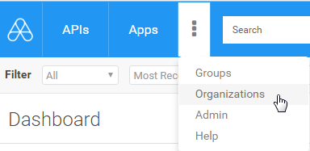
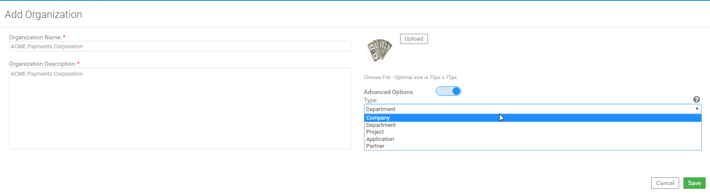
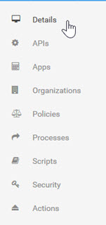
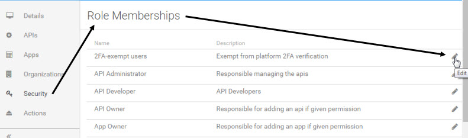

Version [[VERSION]]
Note: This release requires Akana Platform version [[API-VERSION]].
Akana 8.4.x System Requirements
Upgrading the Akana API Platform from 8.2 to 8.4.x
Date/release version |
Changes |
| 11 Oct 2017 8.4.10 |
Updated to include addiitional issues that were fixed in 8.4.10: |
| 9 Nov 2017 8.4.11 |
Modified the wording for an 8.4.11 bug fix, New setting for unique combination of virtual host and context path, to clarify the change. |
| 15 Mar 2018 8.4.16 |
Corrected an error in the code example for the user workflow initial action @UserPhoneNotRequired in 8.4.15 (Workflow for Users: New ability to make phone number optional for specific users (SUP-17304):
<unconditional-result old-status="none" status="registered" step="30"/>This has been corrected to: <unconditional-result old-status="none" status="init-phone-check" step="-1"/> |
| 14 June 2018 8.4.15 |
Added a note on how to get the user's current domain to New API operation to move users from one domain to the other (SUP-17616) |
| 25 June 2018 8.4.19 |
Added an entry for an enhancement Lifecycle Coordinator: support for promoting apps and contracts that shipped with 8.4.19 but missing from the release notes. |
| 2 August 2018 8.4.19 |
Updated release note entry for SUP-17610 ("Subject category of outbound identities replaced with service identity") on support for multiple identities. |
| 9 January 2020 8.4.37 |
Added an entry for bug fix Writing usage data using the REST usage writer could fail. |
This release includes no enhancements.
When Global Settings were selected as an app's OAuth Profile authentication method, the app was using predetermined values that might not have matched those that had been selected in the domain configuration. Now, domain configuration-supported Grant Types will be used when the OAuth Profile Authentication method is set to Global Setting.
Support ticket: SUPPORT-24778
A new recipe has been added to support the automated creation of a standalone OAuth container. The new recipe is oauth-all.json, located in the <installation>/recipes folder.
Support ticket: No related support tickets.
In a cluster environment, access token generation could fail at container restart, due to missing JWKS Key IDs for a domain.
Support ticket: SUPPORT-22230
When the REST usage API reported a non-recoverable write error, the batch writer queues were not being purged, resulting in failure. Now the queues are cleared on fatal writer error.
Support ticket: No related support tickets.
The API GET /api/users/{UserID}/apps, which returns information about a user's applications, was not returning any tags associated with the applications. Now, the tags returned are a merge of all the tags from the app's associated versions, with duplicates removed.
Support ticket: SUPPORT-20827
This release includes no enhancements.
For an OAuth Security policy with the IncludeTokenAttributes option set to "all", custom headers on an incoming request were not being overridden if another OAuth Security policy option, TokenTransformation, was set to "strip." Now, whether the TokenTransformation is set to "strip" or "pass-through", Network Director correctly discards any OAuth custom headers from incoming requests if IncludeTokenAttributes is requested.
Support ticket: SUPPORT-21460
The platform's embedded JDK 8 has been updated to the latest publicly available release (1.8 u201), dated Jan. 15, 2019, under the Oracle Binary Code License (BCL).
Support ticket: SUPPORT-20953, SUPPORT-21199, SUPPORT-10756
When creating an API with a Client app, the app name incorrectly contained the authentication method.
Support ticket: SUPPORT-10774
Repository Client app creation was creating two separate apps with the same name for APIs with multiple versions. Now, client apps have the same version as the API.
Support ticket: SUPPORT-10774
For an organization adding more than 1,000 sub-organizations under one tenant with Oracle DB, Oracle Error ORA-01795 was returned. Now, there is no limit to the number of sub-organizations.
Support ticket: SUPPORT-3328, SUPPORT-10848, SUPPORT-21091, SUP-18705, SUPPORT-3328, SUPPORT-10848, SUPPORT-21091
A user with the role of Business Administrator was able to invite another user to be a Site Administrator using the API:
POST https://{hostname}/api/groups/{GroupID}/members |
Now, an invitation by a Business Administrator to join a tenant's Administration Group returns an authorization error.
Support ticket: No related support tickets.
In some cases, app developers viewing their app had an option to choose "unfollow" on behalf of other users who had followed their app. Now, an app developer cannot unfollow on behalf of another app developer or follower.
Support ticket: SUPPORT-17392
A new parameter modifier context_path_safe can be used with context parameters such as catalog_asset.group.name to transform the resolved parameter value as follows:
For example, using the parameter expression
{catalog_asset.group.name.context_path_safe} |
would transform the group name "Nuestra Compañía #1" to "nuestracompania1".
Support ticket: SUPPORT-10766
For APIs based on Swagger documents, if an operation contained two references to the same model, only one was displaying correctly in the value/schema table column. This also impacted the Test Client.
Support ticket: No related support tickets.
When the platform app setting that determines whether apps can have a visibility setting of Public is disabled, all apps and app versions should allow visibility of only Registered User or Private. With this setting disabled, new apps were created with a visibility of Private, which is correct, but new app versions had a default visibility of Public, which was incorrect.
Support ticket: SUPPORT-17292
For APIs using an HTTP Security policy with client certificate authentication and the option "Get clients X.509 certificate from HTTP header", an "Invalid Certificate" message was returned. This was due to Akana expecting a header value without the following:
-----BEGIN CERTIFICATE----- |
-----END CERTIFICATE----- |
Now, support has been added for sending a certificate in an HTTP header without newlines separating certificate content and certificate header/footers.
Support ticket: No related support tickets.
When updating a service in both Policy Manager and the Developer Portal, some external resources were not resolving correctly, resulting in a WSDL import error.
Support ticket: SUP-18844
In Policy Manager, when a user created a physical service and added an operation using the wizard, the operation was showing up under Bindings > View Binding Details > Operations. However, if the physical service was updated, without changes to the operation, the operation was showing up twice on the Operations list for the binding.
This also caused the following error with Oracle database, when querying all the operations: ORA-01795: maximum number of expressions in a list is 1000.
Support ticket: SUP-18431, SUP-19105, SUP-16242, SUP-16242 SUP-18431 SUP-19105
Monitoring for Jetty connectors has been improved to include the port number in the monitored category names, available in the Administration Console under the Monitoring tab. This makes it easier to identify the monitoring information for a specific listener.
Support ticket: SUPPORT-3964
A new alert code was added for MongoDB to avoid returning an invalid alert code when the database fails to connect.
Support ticket: SUP-18998
In the Businesses service, the PUT operations to update the site settings required either Site Admin or Business Admin permission. Business Admin permission has now been removed. Only a Site Admin can perform these functions.
The affected operations (all with PUT HTTP method):
/api/businesses/{BusinessDN}/alertsettings
/api/businesses/{BusinessDN}/apisettings
/api/businesses/{BusinessDN}/appsettings
/api/businesses/{BusinessDN}/challenges
/api/businesses/{BusinessDN}/commentsettings
/api/businesses/{BusinessDN}/connectionsettings
/api/businesses/{BusinessDN}/discussionsettings
/api/businesses/{BusinessDN}/groupsettings
/api/businesses/{BusinessDN}/loginpolicy
/api/businesses/{BusinessDN}/passwordpolicy
/api/businesses/{BusinessDN}/reviewsettings
/api/businesses/{BusinessDN}/securitysettings
/api/businesses/{BusinessDN}/ticketsettings
/api/businesses/{BusinessDN}/usersettings
/api/businesses/{BusinessDN}/twofasettings
The APIs to add and update an API and/or APiVersion prior to API Platform version 8.1 have been deprecated. These include the following APIs with Content-Type and HTTP Accept headers of type application/json and application/xml, with Platform versions 8.0 or earlier (application/vnd.soa.v80+json). These APIs have not been used in the developer portal since the API Platform 8.1 release.
POST /api/apis
POST /api/apis/{ApiID}/versions
PUT /api/apis/{ApiID}
PUT /api/apis/{ApiID}/versions/{ApiVersionID}
When an API was under a heavy load, policy parsing could result in stack overflow exceptions for all requests until the service was updated.
Support ticket: SUPPORT-10572, SUPPORT-3688
Importing an API whose source organization name was different from the exported target organization name was resulting in a general exception. Now an error message is returned to inform the user that the source organization name must be the same on export and import.
Support ticket: SUP-17875, SUP-17662
When selecting a message variable in the Transform Activity of the Process Editor for FreeMarker, the variable is now initialized, if null. Previously, a message variable was not initialized and the process failed.
Support ticket: SUP-19108, SUPPORT-3730
For an API with a pipeline policy, a fault response was being incorrectly created as a normalized message. Because the message was normalized, the SOAP envelope was re-added to the message, so that the consumer application was unable to parse the response. This was a regression from a fix in 8.4.13; any 8.4 versions prior to 8.4.13 should work as expected.
Support ticket: SUPPORT-5521, SUPPORT-3561, SUPPORT-5309
When updating tenants in Community Manager, not all tenant virtual hosts were retained. Now, tenant creation saves all specified virtual hosts to the theme, so they are retained after site update.
Support ticket: SUPPORT-3415
API historical charts were not displaying for the increments "Monthly by week," "Monthly by day," and "Weekly by day," even when the daily roll-up timezones configured in the Akana Administrative Console under Configuration > com.soa.rollup.configuration did not include the local timezone. These now display properly.
Support ticket: SUPPORT-3898, SUPPORT-3765
A CORS (Cross-Origin Resource Sharing) policy can now be assigned at the operation level, rather than to just a particular service.
Support ticket: No related support tickets.
When applying Denial of Service (DoS) rules, the logic to determine if an incoming client address was IPv4 or IPv6 was incorrect, resulting in errors when an HTTP X-Forwarded-For header included an IPv6 address.
Support ticket: SUPPORT-3593
When the connection string information for an Oracle database was updated in Policy Manager, the change was not propagating through the system. Now, Policy Manager updates the public vault with the new DB connection information.
Support ticket: SUPPORT-3448
Because of a potential race condition under load, the Pipeline policy insert credentials component could fail with an error indicating that the SAML signature node could not be found in the SAML assertion. Under certain circumstances, this condition could result in permanent corruption of the SAML token until the next restart.
Support ticket: SUPPORT-2120, SUP-17490
A regression in 8.4.25 resulted in SNI extensions not being sent to downstream HTTPS endpoints, caused by the use of an older JRE 1.8 version.
Support ticket: SUPPORT-5480
When a Network Director container was deleted, redundant error logs were produced in Policy Manager, resulting in the log getting periodically filled.
Support ticket: SUP-18922, SUPPORT-3545
Connection properties set on access points for Plain Old XML (POX) bindings were being ignored, causing connections to fail. For example, JMS authentication credentials are established using connection properties, so JMS authentication was failing when using the POX binding.
Support ticket: SUP-18034, SUPPORT-2659
To protect against a class of DoS attack which uses multiple slow requests to exhaust server resources (e.g. Slowloris), new HTTP Server Transport parameters can now constrain the number of concurrent HTTP connection and requests from a single client. The parameters can be set in the Akana Administration Console under the Configuration tab > HTTP Server Transport (com.soa.platform.jetty). These are:
http.incoming.transport.config.maxConnectionsPerClient |
Sets the maximum number of concurrent connections from a single client. A value of 0 indicates no limit. Note that if running behind a layer 7 load balancer, this constraint will restrict the number of connections from the load balancer, not the originating client, and therefore should not be used under those circumstances. If this limit is exceeded, the incoming connection is simply closed.
http.incoming.transport.config.maxRequestsPerClient |
Sets the maximum number of concurrent requests from a single client. A value of 0 indicates no limit. If running behind a (layer 7) load balancer, the http.incoming.transport.config.forwarded property must be set in order to properly interpret the X-Forwarded-* headers. If this limit is exceeded, the client will receive a 503 (Service Unavailable) response.
Support ticket: SUPPORT-3724, SUPPORT-3895
When minimums and maximums were defined for the int32 and int64 data types, the HTTP Message Validation policy was not enforcing the required format, in particular for scientific notation which should be flagged as out-of-format for these data types.
Support ticket: SUPPORT-3867
For an external OAuth Provider domain, the Audience field (on the Add or Edit External Oauth Provider Domain > Access Token Validation page) allowed only 64 characters, resulting in potential errors and an inability to support more than one audience value. The Audience field length has been increased to 512 characters.
Support ticket: SUPPORT-3713
When the HTTP Message Validation policy is attached to a virtual service using a Transformation Activity to transform the message, the response was failing with a 500 "Internal Server" error.
Support ticket: SUPPORT-3888
If the database connection was dropped because of network failure, all the Jetty request processing threads were waiting for one thread to finish the cache refresh of the tenant. Now, in the Akana Administration Console's database configuration com.soa.database.config, the default validationQueryTimeout property has been changed from 0 to 5 seconds. For Oracle instances, the default for maxConnLifetimeMillis has been changed from 0 to 1200000 milliseconds (20 minutes). These settings apply to new databases only.
Support ticket: SUPPORT-3415
HTTP headers can now be configured as multi-valued in the API descriptor WSDL. This forces a parse of the header value before it is passed to the downstream service in order to send each part as an individual value, normalizing the values and removing unnecessary spaces in certain cases.
Because this behavior is not always required or desirable, a new connection property http.multi.valued.headers allows multi-valued headers to be configured on a service basis rather than globally for the container, thus avoiding the parse operation when it is not required.
To use this new property, add it to the WSDL within the port element. For example:
<wsdl:service name="SimpleGETService"> |
<wsdl:port name="SamplePort" binding="tns:SimpleGETHTTPBinding"> |
<shttp:address location="http://SampleWSDL:9920"/> |
<soa:connectionProperty name="http.multi.valued.headers" value="x-test-header1, X-Test-Header2"/> |
</wsdl:port> |
</wsdl:service> |
Support ticket: No related support tickets.
While creating or updating an application, leading and trailing spaces are now automatically trimmed if a user explicitly sets the ClientID value. This does not affect the situation in which the user accepts the generated default value for the ClientID.
Support ticket: No related support tickets.
For an external OAuth Provider domain, the platform now supports both single-valued and multi-valued audience claims for token validation, separating the distinct audiences with either a space delimiter or a comma.
Support ticket: SUPPORT-3593, SUP-16843
For non-detached payloads, the JOSE Policy v2 was adding "b64" to crit headers, but the relevant header "b64:true" was missing. Now, only detached payloads will contain a b64 header.
Support ticket: SUP-19111
In the Akana Administration Console, a key alias defined for a bootstrap keystore alias was not being used; rather, a random key from the keystore was used. This is defined under the Configuration tab, com.soa.security category. The alias is now used to identify the correct key entry.
Support ticket: No related support tickets.
The OAuth access token expiration property "expires_in" value defaults to the domain provider setting unless overridden by a value provided by the user within the application's OAuth profile setting.
Support ticket: SUP-17942
The Approval Required label for APIs (defined by the tenant admin accessed through Settings > Public API Settings > Live Auto Approval) was displaying incorrectly. Now the auto approval setting is based on the API's visibility settings (either public or private) set at the tenant level; public settings apply only to APIs with public visibility, and private settings apply to APIs with private visibility.
Support ticket: SUP-17920, SUPPORT-2546
For an External OAuth Provider, validation of the JSON web key (JWT) returned an error in some cases.
Support ticket: No related support tickets.
In the Process Editor, the Transformation Activity was incorrectly creating a normalized message. Because the message was normalized, the SOAP envelope was re-added to the message, with the result that the downstream service could not read the request and the request failed. This was a regression from a fix in 8.4.13; any 8.4 versions prior to 8.4.13 should work as expected.
Support ticket: SUP-18981, SUPPORT-3603, SUP-18459, SUPPORT-3084
Processing by the Runtime Configuration failed when a user was authenticated using SSO (Single-Sign-On) or the user belonged to any domain other than Local Domain.
Support ticket: No related support tickets.
A fix in version 8.4.19, correcting how the subject category is treated for outbound messages, affects any policies that use outbound identities, such as the WS-Security Policy and JOSE Policy.
This fix, which corrected an error, might cause a problem in instances where customers are using the original v1 JOSE Policy with outbound identities, in existing implementations.
The change is not related to the policies themselves, but to how the subject category is treated for outbound messages.
Because of the limited functionality offered by the JOSE Policy, it is deprecated in version 8.4.23. Customers should use the newer JOSE policy version which was introduced in version 8.4.17: JOSE Policy v2 (Unencoded Payload Support). Differences between these two policies include:
For information on the new policy, see Using the JOSE Security Policy v2 (Unencoded Payload Support).
Adding or removing a cluster node to or from the container returned an error in some environments.
Support ticket: SUP-18917
For APIs using the HTTP Message Validation Policy, some regex patterns were evaluated incorrectly. Now the platform conforms to the JavaScript regular expression standard.
Support ticket: SUP-18925
When promoting an API belonging to an organization in the source tenant that did not match the name of an organization in the target environment tenant (including the tenant organization), the APIs were assigned to the Enterprise Group. This was preventing tenant-scoped promotion approvals.
Support ticket: SUP-18949
The promotion of APIs with an attached Aggregate Policy fails with a validation warning that the policy does not exist in the source environment. Now, APIs that reference Aggregate policies can be promoted if the referenced policy and contained policies have previously been imported into the target environment, and the policy keys match those of the source environment.
Support ticket: SUP-18912
Regular expressions were not being correctly validated in the HTTP Message Validation Policy. Now, invalid patterns are detected and return an error.
Support ticket: SUP-18926
For APIs created from URLs using the Dropbox API, only host names that are configured as Forward Proxy Hosts for the Tenant will be allowed. Configure the "Limit forward proxy feature to allow only these hosts" in Admin > Site in the developer portal.
Support ticket: SUP-18930
Tenant repository libraries did not correctly handle the case in which multiple matching Runtime Configuration assets were defined within the ancestor organization chain for an API, leading to the incorrect Runtime Configuration asset being applied to the API. With this fix, the first matching Runtime Configuration asset in an API's ancestor organization chain will be applied.
Support ticket: SUP-18892
On the user profile page (Profile > Details) in the developer portal, the left menu link displays "Details" but supports the keys resource.menu.user.details as well as resource.menu.user.profile for backwards compatibility.
Support ticket: SUP-18838
In a fault scenario where the HTTP Message Validation policy was attached to an API and a validation scope of Fault was specified, fault validation errors were not triggered even though the schemas were defined for the fault responses for correct HTTPS codes or "default" response schema. The fix resolved the issues; now, the correct schemas are picked up, or the "default" schema is used if defined, and an "undefined" response is received where appropriate.
Support ticket: SUP-18802, SUP-18652
When Lifecycle Coordinator was not installed, a blank area appeared on the App and API Details pages, a placeholder for the widget that displays Lifecycle Coordinator assets. This no longer displays when Lifecycle Coordinator is not installed.
Support ticket: SUP-18779
When the Lifecycle Manager Integration feature is enabled, a new App Promotion setting allows app developers to promote the app to the next environment in the taxonomy. The Site Admin can enable the app promotion feature from the Admin | Settings | App Settings page in the developer portal. When enabled, the App Details page includes a right-side pane that displays the taxonomy for the app and a Promote button, depending on the workflow. The workflow controls whether app developers can promote their own apps, the promotion request must be approved, or app developers cannot request promotion at all.
If an app has one or more contracts with APIs that exist in the new environment to which the app is being promoted, the contracts are automatically promoted at the same time, and the app will have the same contracts with the same APIs in the new environment. For detail, see Promoting an App to the Next Environment in the Akana docs.
Support ticket: No related support tickets.
Lifecycle Coordinator now supports promoting an API from the source environment to multiple target environments, either in parallel or routed based on custom properties of the API.
Support ticket: SUP-17849
Additional options have been added to the App OAuth Profile page, including:
Support ticket: No related support tickets.
The App Oauth Profile page on the developer portal now supports mobile-type URI schemas for its Redirect URI authentication setting. For example:
com.googleusercontent.apps.902730282010-ks3kd03ksoasioda93jldas93jjj22kr:/oauth2redirect |
Support ticket: No related support tickets.
In Policy Manager, the Subject category of outbound identities was being replaced during service invocation. Now, the policy correctly supports multiple identities for signing and encryption, allowing asymmetric cryptography.
Support ticket: SUP-17610
The platform previously supported PingFederate's "Admin" API for client registration. Based on customer requirements, the platform now instead supports PingFederate's "Runtime" API for client registration. This support includes a new Version Number field on the Extensions tab of the Add External OAuth Provider Domain page to identify the PingFederate version.
Support ticket: SUP-18514, SUP-17826
Adds the ability to validate the content of REST API requests and/or responses against criteria contained in the Swagger, RAML, or WSDL document used to define the API in the developer portal. In addition to validating form, query, and header parts, this support includes complete validation of JSON message payloads based on JSON schemas contained in the Swagger, RAML, or WADL documents. For detail, see Using the HTTP Message Validation in Policy Manager.
Support ticket: SUP-14623
Changes in the name of an API asset will now be reflected back to the Community Manager API as part of Runtime Configuration processing when the asset is published.
Support ticket: No related support tickets.
If more than one HTTP or WS-Malicious Pattern Detection Policy (MPDP) was attached to a service in Policy Manager, only one was in effect. Now, each MPDP attached to a service has the opportunity to process messages.
Support ticket: SUP-17637
After upgrading to 8.4, some management scripts regarding alerts were not correctly inserted into the queue in a cluster environment.
Support ticket: SUP-18348
When modifying a Pipeline Policy in the developer portal, the Request Configuration category "Modify Component" dialog was not expanding properly, so that all options could not be displayed.
Support ticket: SUP-18365
Lifecycle Coordinator was not correctly synchronizing tenant organizations when a topology contained tenants with identical tenant IDs.
Support ticket: No related support tickets.
Creation of an API using a JSON descriptor document failed when the unique index for the JSON schema reached the max size limit. This also occurred when modifying the API design if the existing JSON schema had been edited.
Support ticket: SUP-18543
When updating an app on the App Oauth Profile page in Community Manager, onboarding a Third Party Provider (TPP) may fail for an Oracle database, due to the way OAuth metadata was stored.
Support ticket: SUP-18192, SUP-18165
Extended properties/workflow validation scripts can now access information, such as physical service endpoints, from an API's implementation. Validation scripts can then use this information to set properties that may later be used in Runtime Configuration classifier values via replacement parameters.
For example, a validation script could retrieve a proxy-implementation's physical endpoint path, manipulate it, and then place the manipulated value into an asset property called "live-vs-endpoint-path" for use in setting the virtual service endpoint paths.
The path classifier in the Runtime Configuration would then be set to:
{catalog_asset.property.live-vs-endpoint-path} |
Support ticket: No related support tickets.
The platform now supports the Open Banking specification with a new option “Enforce Open Banking” for JOSE Security Policy v2. If checked, Open Banking rules are enforced.
In the Akana Administration Console when the Akana Admin Monitoring Tool is installed, the Monitoring tab now includes additional properties:
SUP-17142
Lifecycle Coordinator now includes a “current iteration” classifier value on an API asset. This value represents the currently active iteration for the asset’s tenant.
ATMO- 22951 for 8.4.18 {: Done as of 5/10][Rev, Tim, 5/16]
Lifecycle Coordinator now supports setting URLs into artifacts using asset notifications. This allows the propagation of an artifact from one environment to another based on the artifact of the asset being promoted.
SUP-18135
A Deployment Zone classifier can now be added to a Runtime Configuration asset to define deployment zones for related APIs. Any number of deployment zones defined for the tenant may be selected. Matching API implementations are then deployed in the selected deployment zones.
ATMO- 23963 for 8.4.18 & 2018.0 {: Resolved as of 5/16][Rev, Tim. 5/16]
Lifecycle Coordinator now supports access to tenants fronted by load balancers in which access to the tenant is via the load balancer’s virtual address rather than the tenant’s physical address. This is facilitated with an optional “virtual-address” property in the topology’s tenant definition which is then used to remotely access the tenant.
ATMO- 24185 for 8.4.18
When extended properties/workflow is enabled with required user extensible properties, users are now required to enter extensible properties after activation or on their next login.
ATMO- 20425 for 8.4.18 & 2018.0
The Test Client tool now supports testing apps configured to use the JOSE Policy v2, selected in the Security wizard on the Security Policy: JOSE Security v2 page.
ATMO- 23517 for 8.4.18 & 2018.0 {: Done as of 5/16]. ATMO-23792 0 {: In Progress as of 5/21] [Rev Mujeeb, 5/24]
For requests using the JOSE compact detached policy and Open Banking, some signed requests failed due to an incorrect date.
SUP-17645
When the Envision plug-in is installed and enabled, writing new records to a MongoDB database resulted in null values for the operationName and serviceName fields of the AUDIT collection in the MongoDB’s PM_AUDIT database.
SUP-18118
When the JOSE 2.0 policy is applied and configured for a detached signature, the HTTP header Content-Type being returned was changed. For example, if the backend service sent Content-Type: application/json in the HTTP header, it was changed to Content Type: application/json+jose when returned to the consumer. Now, if Enforce Open Banking is selected for the policy, the Content-Type is not changed.
ATMO- 24107 for 8.4.18 & 2018.0 {: Resolved as of 5/21] [Rev Cherryl, 5/24]
On the JOSE Security Policy v2 OUT Message Options page, the Custom Headers options were incorrectly displayed under “Encrypt Content”; now they appear under “Sign Content.”
SUP-17611
An Elliptic Curve Digital Signature Algorithm (ECDSA) private and public key could not be imported into Policy Manager in the Manage PKI Keys wizard.
ATMO- 23171 for 8.4.18 & 2018.0 {: Resolved as of 5/21][Rev Aren, 5/21]
When an OAuth token’s structure was tempered or invalid, the error code returned was 500 “Internal Server Error,” rather than 401 “Unauthorized.” Now an error code of 401 is returned.
SUP-17839
With PingFederate as the OAuth provider, and when duplicate redirect URIs were defined on the App OAuth Profile page, the app later was unavailable in PingFederate for authentication. Duplicate redirect URIs are now unallowed on the App OAuth Profile, and only unique URLs are sent to Ping in order to handle existing apps that have duplicate redirect URIs.
SUP-18477
When verifying a private iss header, Network Director was incorrectly requiring spaces in the certificate’s Distinguished Name (DN) due to the way the DN attributes were being retrieved. Now Network Director verifies each element in the DN.
ATMO- 24102 for 8.4.18 {: Resolved as of 5/15][Rev Aren, 5/16] [Rev Mujeeb, 5/24]
For JOSE Security Policy v2, the option to add private headers has been added to the IN message options page, along with a new option Enforce Open Banking which, if checked, enforces Open Banking rules.
ATMO- 24103, ATMO-24133 , ATMO-24135 for 8.4.18 & 2018.0 {: Resolved as of 5/15][rev Barbara, 5/16]
As an added security measure, the Dropbox API no longer allows the use of localhost in the hostname, and only HTTP and HTTPS protocols are allowed.
SUP-17012
After upgrading from 8.2.x to 8.4.x, imported APIs were placed in the Tenant organization services folder rather than the API organization services folder. This resulted in an HTTP 401 ”Unauthorized” error message for API Admins.
SUP-17871
After API import, the licensing option was disabled in some cases.
SUP-17875
When creating an API in the developer portal using a Swagger document with no “host” value defined, the target endpoint was set to “http://”, causing problems in future exports and imports. Now, the API is created without an endpoint if the "host" value is not present in the Swagger document.
SUP-18136
After upgrading to 8.4.17, in some cases, APIs with Delete methods in a Swagger API description document could not be deployed.
SUP-18407
Exporting a WADL API description document resulted in an invalid WADL file with missing operation details.
SUP-18106
ATMO- 23690 for 8.4.18 & 2018.0 {Status 4/27: Resolved as of 5/8] [Review Andrew, 5/10]
Additional logging is now generated to assist in debugging issues with the WS-Security policy handler.
ATMO- 23968 for 8.2.31 and 8.4.18 {Status 4/23: Resolved }[copy by Gerry, 5/3]
The platform now includes a new policy, JOSE Security Policy v2, which supports both these standards:
Features of this new policy include:
SUP-17643, SUP-17658, SUP-17646, SUP-17610, SUP-17645, SUP-17611, SUP-17819
ATMO- 23072 for 8.4.17 & 2018.0 {Status 4/23: Resolved }[Rev Aren, 4/23
ATMO- 23087 for 8.4.17 & 2018.0 {Status 4/23: Resolved }[Rev Aren, 4/23]
ATMO- 23074 for 8.4.17, 2018.0 {Status 4/23: Resolved. Rev. Aren, 4/9}
ATMO-23022 for 8.4.17 {Status 4/23: Resolved.}
ATMO-23082 for 8.4.17 & 2018.0 {Status 4/23: Resolved. Rev by Aren, 4/9}
ATMO-23483 for 8.4.17 & 2018.0 {Status 4/23: Done.}
ATMO- 23030 for 8.4.17 & 2018.0 {Status 4/11: Resolved.{Rev Aren, 4/11}
ATMO- 23272 and ATMO-23821 for 8.4.17 & 2018.0 {Status 4/23: Resolved. [Rev Aren, 4/23]
Also related to ATMO-23829, adding Psxxx algorithms to CM UI, but that is not yet resolved.
The database table MO_USAGEDATA includes a new index MO_USGDATA_SER_REQDTS that provides improved performance when querying the database:
CREATE INDEX MO_USGDATA_SER_REQDTS ON MO_USAGEDATA(SERVICEID,REQUESTDTS);
Note: Customers using RDBMS for usage logs prior to upgrading from 8.2.x to 8.4.x will need to prerun the index.
SUP-17887
The certificate and public keys attached to an API implementation can now be included as part of API promotion, for both local and remote situations.
SUP-17938
The API Platform supports the ability to create a “client app” representation of an API, used to establish contact with other APIs. This app is automatically generated if set, and includes metadata properties identifying the related API or app. The generated client app also validates to ensure that all contract dependencies to virtual services exist in the target tenant.
ATMO- 23398 & ATMO-22955 for 8.4.17 {Status 4/23: Done.} {Rev, Tim. 4/10}
For multiple early-stage tenants on a single API Platform installation, preserve keys can be disabled for promotion between these stages and enabled for remaining downstream stages.
In previous releases, it was necessary to choose whether unique Ids would be preserved during promotion at a Lifecycle Coordinator installation level. This prevented the possibility of hybrid topologies with a mix of remote and co-located tenants. The key preservation behavior is now set automatically, based on the relative location of source and target tenants for a promotion. With this change, the setting of the preserve-keys configuration flag is no longer necessary.
ATMO- 22953 for 8.4.17 and 2018 {Status 4/23: Done.} {Rev, Tim. 4/10}
The Runtime Configuration functionality, previously available only in Lifecycle Manager, is now available in Lifecycle Coordinator. This allows templates for API implementation properties to be established and selectively applied based on custom property filters.
Runtime configuration is accomplished through customization of the Lifecycle Manager library in which custom properties for a tenant are configured. This configuration requires a working knowledge of the Lifecycle Manager application and the Configuration Designer Tool.
For more information, see http://docs.akana.com/cm/promotion/promotion_users_guide.htm#runtime_config (Promotion Guide).
SUP-17062
With the addition of the Runtime Configuration feature, Lifecycle Coordinator now supports control of the Approval Required flag on an API. This can be used, for example, to support a scenario in which an API will be exposed to different groups of consumers: for example, internal consumers who should be able to create a contract automatically, and external consumers whose requests should be approved by the API Admin.
This classifier is applicable only when the Allow Anonymous Access flag is set to False. Leaving this classifier unset indicates that the Approval Required value of the implementation should not be modified.
ATMO-22950 for 8.4.16 {Status 4/23: Done} {Rev, Tim. 4/10}
For newly created APIs, the extended metadata/workflow can now set the path classifier to define the context path for every endpoint. This helps ensure that the path is unique.
SUP-17669
For the PingFederate provider, the developer portal’s External OAuth Provider domain setup now supports an additional property Synchronize Client Certificate, available on the Extensions page. If checked, apps that have a contract with an API using this domain can authenticate with PingFederate via the app’s certificate.
SUP-17877
In the developer portal’s External OAuth Provider domain setup, Provider page, the Supported Grant Types field now includes an additional option, Refresh Token. The new option supports external OAuth providers that list refresh token as a separate grant type. The new option appears on the list of default grant types only if the user selects manual configuration or if the provider’s well-known configuration includes it. If any domain on the platform includes this option, it appears on the default list of grant types in the App OAuth Profile page.
Note: This option doesn’t appear in domains that were created before upgrading to 8.4.17. To make sure the new option is enabled in the App OAuth Profile page, you can create a new domain and select the Refresh Token option. It will then appear in the App OAuth Profile page, and will work for pre-existing domains even though the setting doesn’t appear in the user interface for those domains. Using this approach means you don’t need to re-create existing domains.
SUP-17725
A new task “Promote API to next Environment” is now available when customizing the API workflow behavior using the Lifecycle Manager Extensions feature. This task can be used to trigger auto-promotion of an API based on the current state of the API’s custom properties.
ATMO- 23394 for 8.4.17 & 2018.0 {Status 4/23: Done.}{Rev. Tim, 4/11}
A Promotion Profile can now optionally specify updates to instances of an API within environments of a topology on completion of a successful promotion, using custom properties on the development and test tenants. See http://docs.akana.com/cm/promotion/promotion_users_guide.htm#asset_notification for more information.
ATMO- 22948 for 8.4.17 {Status 4/23: Done }[Rev Tim, 4/23]
Parsing of scripting policies was occasionally causing a Stack Overflow Exception, because the mechanism used to embed scripts in XML sometimes resulted in an invalid XML document.
SUP-15640, SUP-16980
In some environments, creating a service failed due to connection pool errors. This was caused by one of the scheduler jobs (CRL refresh) failing to parse the response, thus exhausting the connections in the pool.
SUP-17293
When promoting from environments other than the initial environment in a topology (environments 2-n), a promotion failure may occur. This failure corresponds with an error in the app_x logs indicating that an asset “was not locked”.
SUP-18137
Policy validation was recognizing policies only at the tenant organization level. Now, policy validation includes policies in sub-organizations.
SUP-18151
The previous implementation for asset notifications supported static values only; now, values can be retrieved from the target environment’s object context.
SUP-18135
In some cases, when a JOSE JWS request/response with OAuth encountered an authorization error, an HTTP 500 error was returned, rather than the expected 401 status code relevant to message security.
SUP-18211
Some HS algorithms used in the JOSE Security policy for signing and verification were returning errors.
SUP-17603
For security policies configured with a specific algorithm suite, the default behavior of the policy enforcement handlers is to allow sending requests that use a different algorithm suite without returning an error. In order to support validation of algorithms while retaining backwards compatibility, a new configuration property, com.soa.wssecurity -> validate.algorithms, has been introduced. By default, this is set to false. When true, the WS-Security policy handler validates that the algorithms used for signatures and encryption match the configured algorithm suite.
SUP-17828
Compiled scripts are pooled to improve performance. Unused scripts were not being removed from the pool correctly, resulting in a memory leak that could ultimately lead to an out-of-memory error.
SUP-15356
When adding a user from a group on the “Add Users” page, the page failed to load.
ATMO- 23667 for 8.4.17 & 2018.0 {Status 4/23: Closed } [Rev David, 4/23]
In previous releases, if an Envision Business Metrics policy was defined with a dimension mapped to a query parameter in the request, and a request was then issued to the API without the query parameter specified, the invocation failed with a 500 response. With this release, a missing query parameter will be tolerated without error.
SUP-17557
When a previously disabled user was reenabled, that user received another, incorrect notification of being disabled. The fix ensures that the user’s “Expire Date and Time” column is now set back to NULL when the user is re-enabled.
SUP-17273
Multiple queries to an LDAP server were each opening a separate connection, exhausting the connection pool. The connection pool is now configured to block if no connections are available and the fairness flag is used to avoid thread starvation, addressing any potential leaks.
SUP-14058
When logging in from an external domain that was not configured for the logged-in hostname, the developer portal user interface displayed blank Password and Security pages.
SUP-17966
When syncing OrgGroups with the tenant Organization, the tenantID property was getting lost, resulting in promotion requests not being assigned to the proper OrgGroup. This was a regression from work done to resolve SUP-17060 in version 8.4.13.
SUP-17060
For an API that included a compound classifier that was optional, read-only and had no value, saving properties failed in some cases.
SUP-17848
The MongoDB database installation did not successfully complete after an API Platform upgrade, retaining pending index tasks.
SUP-18076
The out-only message operation is not supported, but was incorrectly included in the Describe Operation help pane.
SUP-10754
WSDL files without a valid HTTP method defined were returning “Unrecognized Exchange Pattern" (10001) errors. Network Director now logs an error but continues processing using the incoming HTTP method. If there is no incoming HTTP method, an exception is generated.
SUP-17349, SUP-17174, SUP-18047
When upgrading from 8.2.14 to 8.4.15 when using database Oracle 11g, upgrade of the database schemas failed if entries were set to NOT NULL for the column that already had NOT NULL, due to Oracle limitations.
SUP-18011
The referential integrity constraint was not present on the BUSINESS_USER_SETTINGS table, causing entries to remain in the table after business deletion.
SUP-1792
API operations were not displaying in gray for the HTTP default response status code.
SUP-17940
ATMO-23523 for 8.4.17 {Status 4/23: Closed.}{Rev Jennifer 4/2}
In Lifecycle Coordinator, the Promotion Profile can now include a set of policy mappings to tailor the propagation and validation of policy references when an API is promoted to the target environment.
For example, use the PolicyMapping element to:
Further, a new policy mapping property original-tenant-name can be added to the tenant definition to indicate the original name. This prevents unmapped validation errors when promoting an API, in the event that the tenant name has been changed in the site settings. For example:
{
"id": "devtenant",
"name": "DevelopmentTenant",
"address": "http://devacmepaymentscorptenant:9457",
"properties": [
{
"name": "original-tenant-name",
"value": "Tenant1"
}
],
...
}
For more information and examples, see http://docs.akana.com/cm/promotion/promotion_users_guide.htm#s05_07_03.
SUP-17634
The Top APIs section was displayed on the API > Analytics > Overview page but was not needed and was creating an unnecessary server load. This has been removed.
ATMO-23571 for 8.4.16 {status 3/20: Unresolved }{Copy okayed by Arjun 3/20}
Setting a property as optional and invisible/uneditable in the UI had no effect, i.e. the property appeared as optional and editable. Classifiers and artifacts that are read-only and have no value are now hidden if set.
ATMO-23449 for 8.4.16, {Status 3/19: Resolved}{Copy ok TG, 3/15}
Cloning the container or hosting endpoints from a node to a cluster was failing when a SOAP binding was missing the Transport URI extensibility element in the WSDL. This has been fixed.
SUP-17453
ATMO- 23244 for 8.4.16 {Status 3/16: Closed. Copy ok: MM}. ATMO-23245 for 8.2.30/ ATMO-23244 for 8.4.15 (closed but not in 8.4.15 rel notes) + 8.5
When API import was being used with a mapping.properties file that mapped between containers in source and target environments, the import was generating an error. This was fixed in version 8.4.15 in SUP-17662 and worked for most upgrade scenarios, but didn’t work for customers upgrading from 8.4.14. This fix has now been completed so it works for all upgrade scenarios.
SUP-17945
When a new role was created in the developer portal that gave full access permissions for contracts, and that role was then assigned to a user, the user was still unable to cancel, reactivate, or suspend a contract. Policy Manager role definitions have been expanded to include Contract as well as App and API. The Policy Manager user can now define a role that includes full control for contracts. A user with this role can cancel, reactivate, or suspend a contract. In the developer portal, the Business Admin can then assign this role to the user.
Note that the role must be implemented in a custom API Contract workflow for this feature to work.
For example, consider a role “ContractExecutive” added in Policy Manager. To give a user assigned to this role the ability to suspend a contract, add the condition authorizeByAtmosphereRole to the API Contract workflow in the sections where the contract status and the suspend action apply:
<action id="600" name="apicontract.action.suspend">
<restrict-to>
<conditions type="OR">
<condition type="authorizeByAtmosphereRole">
<arg name="role">&AtmoRoleApiAdmin;</arg>
</condition>
<condition type="authorizeByAtmosphereRole">
<arg name="role">ContractExecutive</arg>
</condition>
</conditions>
</restrict-to>
...
</action>
SUP-16515
For an API operation with a Process activity containing an Activity Name field that exceeded 64 characters, message data was not written to the logs, and the following error was generated:
UsageWriter failed to record usage log record in database. Data has been lost.
The new behavior limits new Activity Name entries to 64 characters, but allows existing names up to 128 characters.
SUP-15937
Security vulnerabilities reported in Struts 1.2.9 have been thoroughly researched. Supplementary Policy Manager security is such that Policy Manager is not vulnerable to these threats. However, additional security checks have been added to strengthen its existing validations.
SUP-17283
The ResourceServer API was being provisioned both on OAuth and Community Manager containers when installed separately. The Akana OAuth Plug-In on the Community Manager container was causing the API to be provisioned, which is now no longer the case. The API should be provisioned only on containers where the OAuth features are installed, not the Akana OAuth Plug-In.
SUP-17587
When setting up rules for a vanity host and path, then changing the rules and re-promoting, the vanity host and path were not changed.
SUP-17668
When signing and encrypting a JWT Token that had expired, a generic HTTP 500 (Internal Server Error) status code was returned to the user for an External OAuth Provider domain. If the OAuth Provider domain was used, an HTTP 401 (Unauthorized) status code was returned. This has been fixed so that HTTP 401 is returned for expired tokens for External OAuth Provider domains.
SUP-17839
When adding one or more nodes to a cluster, it was necessary to re-run the Provisioning task. This has been fixed.
ATMO-23330 for 8.4.16 {status 3/19: Resolved}{Copy okayed Gerry, 3/16}
When using Simple Dev theme, anonymous users attempting to access the My Applications or My Profile pages via bookmarked URLs are redirected to the login page. After login, the user should be returned to the bookmarked URL, but was instead returned to the welcome page. This has been fixed so that after login, the user is returned to the requested page.
SUP-11918
The emails of Siteminder domain users were being overridden with an empty string. This was a 9
caused by changes in version 8.4.15 for SUP-17301. This has been fixed. To reinstate an email, upgrade to 8.4.16 and log in.
SUP-17951
Previously, Dashboard notifications could only be deleted individually. However, in some scenarios, one user might have a large number of notifications. The new feature allows users to delete many notifications at once. It includes two new checkboxes at the top of the page: Delete Checked and Delete All on Page.
The Dashboard page uses infinite scrolling rather than paging, so a user who has many notifications only needs to scroll down to load additional notifications (20 at a time).
Each notification has a checkbox. The user can use any of these approaches:
JLG-204422
By default, Test Client applies URL encoding to any special characters in the request URL. However, in some cases the user might not want URL encoding to apply.
For flexibility, Test Client now includes a check box, directly below the URL field, titled Encode URL.
The new check box is checked by default, to control URL-encoding of the URL. Users who don’t want URL encoding can just clear the check box.
SUP-15334
The following changes have been made to the List of Users page to increase usability of this page for the Site Admin:
SUP-15912
The platform’s OpenID Connect Relying Party domain now supports an additional claim, phone number, in addition to the existing supported claims of subject, first name, last name, and email.
The new claim is set up in the domain configuration (Admin > Domains > Add > OpenID Connect Relying Party), Tab 7, User. The default value is phone_number.
In addition, the platform also now supports additional claims that might be returned by the OpenID Connect Relying Party. If additional custom claims are returned, they are relayed in the response message for the GET /api/users/{UserID} operation.
SUP-17301
For users who log in using an external identity provider, certain pieces of information, such as First Name, Last Name, Email, and Phone Number, are stored in the user’s profile in the developer portal.
The platform has now been enhanced to automatically retrieve any updates to this information, from the identity provider, at user login. If the information has changed, the user’s profile is automatically updated.
SUP-16890
If the Site Admin adds a user in the developer portal, the new account is disabled after a specified time period if the user never logs in. The time period is determined by the Site Admin in the user settings (Admin > Settings > Users).
The previous maximum was 30 days. These choices have been expanded for greater flexibility. The choices are now: any single digit 1–30; 45, 60, 90, 120, 150, or 180. You can also choose Never Expire.
SUP-17296
By default, the platform required acceptance of the platform legal agreement, if one is uploaded to the developer portal.
The platform now supports the capability to customize the user workflow so that users belonging to a specific login domain, or users with a specific role, can skip the mandatory acceptance of the developer portal legal agreement.
The new feature includes a new workflow function, acceptAgreementForDomainUsers.
If this custom workflow feature is in place, new users who match the specified condition do not see the developer agreement. For these users, the login process just skips that step.
In the example below, this function is added in the workflow document, in the "@Login" section, to skip requiring acceptance of the developer portal agreement for users of the acmepaymentscorp domain. This argument also supports multiple domains with comma separator.
<function type="acceptAgreementForDomainUsers"> <arg name="DomainName">acmepaymentscorp</arg> </function>
In the example below, this function is added in the workflow document, in the "@Login" section, to skip requiring acceptance of the developer portal agreement for users who have either the Business Administrator or API Developer roles. This argument supports multiple roles with comma separator, as shown below.
<function type="acceptAgreementForUsersBelongToRoles"> <arg name="role">Business Administrator,API Developer</arg> </function>
Note: To see where these fit into the workflow document, you can download the user workflow from the developer portal. The new function is in the default workflow, but is commented out.
SUP-17303
By default, new user signup requires phone number.
The platform now supports the capability to customize the user workflow so that users belonging to a specific login domain are not required to provide a telephone number. If this functionality is in place, and the condition is met, the phone number is not shown.
The new feature includes:
If this custom workflow feature is in place, users who belong to the specified domain are not required to provide telephone number. Instead, the field is not shown.
This argument also supports multiple domains with comma separator.
The example below shows the new initial action and the new condition. If the user belongs to the specified domain, the condition is met, and the phone number field is not shown.
<action id="25" name="@UserPhoneNotRequired">
<restrict-to>
<conditions type="AND">
<condition type="doesUserBelongToDomain">
<arg name="DomainName">acmepaymentscorp</arg>
</condition>
</conditions>
</restrict-to>
<results>
<unconditional-result old-status="none" status="registered" step="30"/>
</results>
</action>
Note: To see where these fit into the workflow document, you can download the user workflow from the developer portal. The new initial action and condition are in the default workflow, but commented out.
SUP-17304
Lifecycle Coordinator functionality includes a new rule that changes the name of the OAuth provider for a promoted API in the target environment. This allows mapping for the OAuth Provider.
Note: The new rule is only for use in scenarios where the configuration of the source and target OAuth Providers is identical, including scope definition. If the configuration is not identical, using this rule might cause promotion errors.
The example below changes the OAuth Provider name from SourceProvider to TargetProvider.
{
"scope" : "vs",
"condition" : "vs.oauthProvider == 'SourceProvider'",
"action" : "vs.oauthProvider = 'TargetProvider'"
}
SUP-17542
In a scenario where special characters were entered in the platform login fields, the Akana Administration Console login page was returning certain information that could potentially be used to extract sensitive information.
Messaging has been improved and standardized to be consistent and not share any information except that the username/password combination failed to authenticate.
ATMO-22913 for 8.4.15 {Status 2/13: Closed} / ATMO-22914 for 8.2.28 {Closed 1/25/18} {Rev BH 1/25}
The Akana Administration Console login page was returning different messages depending on whether the username was valid and the password was invalid, or the username itself was invalid. Returning different results could facilitate username discovery by a malicious source.
Messaging has been improved and standardized to be consistent across both use cases.
ATMO-22916 for 8.4.15 / 8.5.0 {Status 2/13: Closed} / ATMO-22918 for 8.2.28 {Closed 1/25/18} {Rev BH 1/25}
A new setting was added for configuration of the run time for MongoDB MapReduce.
The new setting:
Configuration Categories > com.soa.persistence.mongodb > persistence.mongodb.mapReduceMaxExecTime.
The value is in minutes; for example, 1440 = 24 hours/1 day
ATMO-23002 for 8.4.15 {Status 2/13: Closed} {Rev OK MM 2/21}
A new operation was added to allow the developer portal Site Admin to move users from one domain to another.
Details of the new operation, in the Users service:
{
"UserDomain":"{NewDomainID}",
"Comments":"{Comment text}"
}
{
"UserDomain":"Domain2",
"Comments":"Moving user from Domain1 to Domain2."
}
Notes:
To get the user’s current domain, use the GET /api/users/{UserID} operation (see http://docs.akana.com/cm/api/users/m_users_getUser.htm).
When the Site Admin changes the user’s login domain from another domain to the local domain, password reset is needed, since the user’s password information isn’t accessible to the local domain. To reset the user’s password, use the PUT /api/users/{UserID}/password operation (see http://docs.akana.com/cm/api/users/m_users_modifyPassword.htm.
SUP-17616
When OAuth settings in the developer portal were set to not generate a refresh token (OAuth Provider domain, Tab 2, Grant Types), the refresh token was still generated.
SUP-17148
The developer portal’s support of Swagger docs did not include support of optional Boolean parameters. Values of true and false were the only possible values recognized; because of this, even when the parameter was optional, the developer portal required a value.
A new option, select, has been added for both required and optional Boolean parameters.
SUP-17514
Policies set up in Policy Manager at the API Platform Tenants level were showing up as available for selection for APIs set up within a business organization for a specific tenant. When selected, these policies were returning the following authorization error:
Unable to view Policy for key: urn:uuid:da0132a2-05f8-11e8-96ed-f37ef11886ec.
Error Authorization error: User [Local Domain\adminTenant1] does not have permission to
perform the action: [Read]. [Read] permission is required for the resource
[urn:uuid:{resourceid}] to perform this action.
This has been fixed so that policies set up at the tenant organization level are not available for selection at the business API level unless they’ve been specifically set up for that business.
SUP-17634
In a scenario where Lifecycle Coordinator was in use, Lifecycle Manager classifiers displayed in the developer portal user interface were displayed with the name value visible to the user, rather than the display-name value.
This has been fixed so that if a value is provided for display-name, that value is used. If no value is provided, the name value is used.
SUP-17419
In a scenario where a read-only compound classifier was used when promoting assets from one lifecycle environment to another, the classifier value was lost.
SUP-17539
Required Boolean classifiers were defaulting to true, and the unspecified option was removed.
This has been fixed so that Boolean classifiers support values of true, false, and unspecified, but a required classifier requires true or false.
SUP-17019
In a scenario where Lifecycle Manager 8.0 was in use with Policy Manager (without Community Manager), and the communication from the Policy Manager server to the Lifecycle Manager server required SSL, the initial publish of a service from Lifecycle Manager to Policy Manager after a long period of inactivity or after a restart of the Policy Manager server was failing. This has been fixed.
SUP-15287
In a scenario where Lifecycle Coordinator included an approval from a sub-organization in the developer portal (child business organization), the approval was not working due to the generated approval request being incorrectly assigned to the tenant (top level) organization.
SUP-17711
In some cases, eviction of JMS sessions from the internal session pool resulted in the underlying connection being closed, causing intermittent traffic interruptions.
SUP-16775
There was an intermittent timing problem that could cause exceptions starting Network Director bundles that use the Java service loader mechanism to initialize the JAX-RS runtime delegate. The JAX-RS service factories were updated to do this as part of their initialization.
SUP-16597
After upgrade to version 8.2.12, there were issues when re-registering services using WSDLs with wsp:policy declarations.
The issue was that when the originating service was removed, it left the ws-security policies in place, and when a subsequent service was registered with the same WSDL, the following error was generated:
com.soa.workflow.WorkflowExecException: Error while executing workflow [The work flow state [Active] doesn't allow to modify work flow object for user [Local Domain\RepositoryManagerIntegration]]
SUP-14836, SUP-15211, SUP-15797, SUP-16423, SUP-17534
In a scenario where the locale was set to something other than en_US (for example, en_UK), the FreeMarker option that’s used by the Transform Activity in the Process Editor was not working. This has been fixed.
SUP-16309
In a scenario where API import was being used with a mapping.properties file that mapped between containers in source and target environments, the import was generating the following error:
Caused by: java.lang.NullPointerException at freemarker.cache.TemplateCache.loadTemplate(TemplateCache.java:497)
SUP-17662
After upgrade to version 8.2.6, certain special characters that had been previously allowed in the API context path—for example, the underscore—were no longer allowed. This has been fixed.
The special characters that are allowed in the context path are:
Forward slash (/), dot (.), hyphen (-), underscore (_), tilde (~).
SUP-17719, SUP-17666
When modifying the styles for the developer portal, users must download the custom_template.less file, make the changes, rename it to custom.less, and upload the modified file.
A note was added in the file itself to instruct users what to do.
FND-318278
In a specific scenario where the client attempted to create a service using an invalid set of parameters, the Service Management API was returning 204 (No Content) when it should return 400 (Bad Request). For example, a POST on the rest/services interface with invalid request content returned 204.
This has been fixed and the documentation for the service has been updated.
SUP-17314
During installation, the Provisioning pending installation task opens the Provisioning wizard. This task Initializes resources associated with the features installed on the container.
The Provisioning task was not correctly returning the information that it had completed successfully.
SUP-16559
A new option was added in Lifecycle Coordinator to preserve the UUIDs for the elements of an API during import to a target environment. These elements include the underlying services and their containing organization.
The new option, PreserveKeys, takes a Boolean value and is set in the com.akana.lifecycle.coordinator property in the Akana Administration Console, Configuration tab. The default value for PreserveKeys is true. If multiple tenants in a topology share the same container, the value should be changed to false.
ATMO-22181 for 8.4.14 {Status 1/16/18: Closed} {Copy: TiGr 1/17}
New settings were added in the developer portal to allow the Site Admin to control settings relating to apps with a visibility setting of Registered Users.
The new settings, in Admin > Settings > Apps, control whether users can:
ATMO-22229 for 8.4.14 + 8.5 {Closed 1/19/18} {Rev OK AB 1/17}
In Hermosa theme, when editing the process for any operation, the Process Editor was not prompting the user to save if the user clicked away from the page. Instead, if the user had made changes, they were lost.
A popup has now been added to prompt the user to save changes before exiting from the Process Editor.
SUP-12241
The maximum character length for App Name was previously 64 characters. To support the Open Banking initiative, up to 140 characters were required. The platform now supports up to 160 characters for App Name.
SUP-17299
In a scenario where the Anti Virus policy generated an error response to the client because of an ICAP server error, the message included information that should not be exposed, such as the IP address of the ICAP server. This has been fixed so that sensitive information is not included in the error message.
ATMO-22119 for 8.2.28 {status 1/19/18: Resolved} / ATMO-22871 for 8.4.14 {Closed 1/19/18} {Copy GW 1/16}
In a scenario where there are errors in the interaction between the tenant and Lifecycle Coordinator, such as validation errors, a Board item is now generated to the API’s Board, visible to all API Admins.
ATMO-22451 for 8.4.14 + 8.5 {Closed 1/19/18} {Rev OK TiGr 1/17}
With Internet Explorer, if a user logged out of the Akana Administration Console for Policy Manager or Network Director, the logout action triggered a refresh cycle where the browser would keep refreshing the login page until the active window was closed.
SUP-13148
The back end was not validating certain aspects of the constraints specified for answers to the security questions; for example, Minimum Special Characters.
ATMO-21676 for 8.4.14 + 8.5 {Closed} {Rev OK AB 1/17}
When the Anti Virus policy was configured to scan and delete infected policies, and was attached to a service, even if the policy didn’t detect a virus it was deleting the attachment and not sending it on to the API endpoint.
SUP-14314
The developer portal includes an option for the Site Admin to lock a user. However, this only works for local domain users. If a user signs in using another domain, such as a Google domain, locking a user doesn’t work.
The developer portal has been updated to accurately show the Site Admin’s choices, which vary according to type of user:
ATMO-22607 for 8.4.14 {Closed 1/17/18} {Rev OK AB 1/17}
In version 8.4.13, promotion in the SaaS environment was resulting in a deadlock condition in Lifecycle Coordinator. This has been fixed.
SUP-17540
In version 8.4.12, it was not possible to replace the vsep path with another value on promotion. This has been fixed.
SUP-17538
In the SaaS environment, in a scenario where a container had multiple listeners—for example, an HTTP listener and an HTTPS listener—if an API implementation was deployed to the corresponding deployment zone, two endpoints should result. However, during promotion of the API, only one of the endpoints was being promoted to the target environment.
SUP-17541
In a specific scenario where a proxy API was created from an imported Swagger document with the name swagger.json, calls to the API failed even though the endpoint was valid. The calls returned the following error:
{ "faultcode": "Server", "faultstring": "Error encountered executing svc_{servicename}.
Cause: Internal system error" }
Creating the proxy API first, and then editing the design by uploading the Swagger document, worked.
This has been fixed so that importing from a Swagger document works as expected.
SUP-16199
In a scenario where Lifecycle Coordinator had been installed and configured, the UI components were still not loading in the developer portal user interface.
The issue was that updates to tenants where the address had changed were not handled correctly.
This has now been fixed.
SUP-17513
If the creation of public APIs is disabled, and you create an API by uploading an API descriptor document, an error is generated. This was a regression which is now fixed.
SUP-17259
For certain APIs, in the developer portal user interface, neither the API Details page nor the API description would load, and the user interface returned an error. This was because of a bug with the user interface’s support of Swagger specification extensions (https://swagger.io/specification/#specificationExtensions). This has now been fixed.
SUP-16410
Lifecycle Coordinator now supports Business Organizations in the developer portal. This means that apps and APIs can now be managed within the context of their business organizations when Lifecycle Coordinator is in use. For example:
SUP-17060
Previously, thread pool properties for Add/Edit Container Listener could only be set up in Policy Manager. These settings have now been added in the developer portal.
In the context of the developer portal, thread pool settings are configured for the listener by the Business Admin (Admin > API Gateways > choose API Gateway > Inbound Listeners section, Edit button > choose listener > Edit).
ATMO-22115
Authorized users can now add and edit identities for an API implementation. Previously, this activity could only be completed in Policy Manager.
To edit an identity: API > Implementation > Edit button.
ATMO-22418 + ATMO-21137 for 8.4.13 / ATMO-20455 for 8.5
In a scenario where the QoS throughput policy was exceeded, the app name was displayed as "undefined" in API transaction logs, with a “Quota Exceeded” error message.
Now, if the quota is exceeded, “Unknown” is displayed in the app column. When the quota is exceeded, the contract isn’t used and the transaction is rejected, therefore the app name isn’t displayed even though the atmosphere_app_id was passed.
In this scenario, the same transaction will not show up in the app logs, since the contract was not used.
MUT-354329
Per the Swagger definition, path parameters are always required; therefore, default values are ignored. These rules were not apparent in the API Designer user interface; the API Designer allowed path parameters to be set as optional, and default values to be specified, but this information was not saved or, if saved, was not implemented.
Now, the API Designer UI has been modified to clarify the rules for users. In the Add and Edit views, for a path parameter, the Required checkbox is displayed as checked but is disabled so that users cannot change this setting. In the summary view, no default value is displayed.
SUP-17190
A new platform configuration setting was added to increase security by preventing XSLT transformation. This helps protect against malicious attacks.
Now, by default, XSLT transformation is not allowed. If necessary, customers can enable the setting, but this is not recommended.
The new setting is in the Akana Administration Console for the container:
Configuration Categories > com.soa.framework.xsl.transform category > java.extension.enabled field.
SUP-17013
In the developer portal, when a user uploads a certificate, the user interface should read the aliases from the certificate and display a list of available aliases, from which the user can pick one. This was not working in these two places in the UI, and has now been fixed:
SUP-16691
In a specific scenario where OAuth Resource Owner (password) grant requests were in use, and the resource owner username included a plus sign (+), the plus sign was represented as a space in the Subject claim of the JWT access token, due to an encoding/decoding error.
SUP-16539
This API operation returns the APIs for the specified user, and can be run by that user or by a Site Admin. However, when a Site Admin called the operation, APIs for the Site Admin were returned as well as APIs for the specified user.
This has been fixed so that only the APIs for the specified user, per the UserID in the URL, are returned.
SUP-16381
In Policy Manager, when defining an action on a Service Level Policy, it was not possible to set a time period that ended with midnight (00:00); the user interface didn’t allow it. This has been fixed so that midnight can be entered as 24:00.
SUP-17083
In the first tab of the API Access wizard, the user chooses an app, and then goes on to make other selections in subsequent tabs of the wizard. It’s possible to click through to other tabs and try to complete the wizard without choosing an app, in which case, on save, the first tab title is displayed in red to indicate an issue.
In the past, in the actual tab, there was no messaging to tell the user that this issue was that an app had not been not selected. Now, messaging has been added to better direct the user.
SUP-10250
When an API was defined by importing a Swagger API Description document, with a Delete operation defined with a success response of 204, the platform was building the process without a Reply Node. This resulted in the behavior being asynchronous, and the operation not working.
In another scenario, a 400 error response was defined for a Delete operation, but the platform did not correctly relay the response body.
Note: this issue was actually fixed in version 8.4.10, but was not included in the 8.4.10 release notes.SUP-16471, SUP-16553
Within the developer portal, the Search feature indexes the uploaded content and other pages and returns search results from this content.
There were several issues with the Search feature, caused by the way it constructed the URL and resulting in problems with search results for documents uploaded to different sections of the /content folder structure. In some cases, content pages were not included in search results; in other cases, they did appear in the search results, but when the user clicked the link, the content was not displayed correctly due to the way the platform constructed the URL.
SUP-11020
Previously, the API outbound identity could only be set up in Policy Manager.
From within the Process Editor in the developer portal, in the Invoke activity, an attempt to define the identity resulted in the following error message:
Identity not found.
This functionality has now been added in the developer portal so that these settings can be defined or changed in either Policy Manager or Community Manager and the settings are in sync.
SUP-15806 / SUP-17187
In the developer portal, it’s possible to reference an external website within an <iframe> tag in a content page, using the &doc parameter:
{protocol}://{hostname}/{tenant}/#!{sitepage}&doc={URL-encoded external URL}
The example below illustrates how this might look using the Simple Developer theme’s documentation page, and referencing the external website http://www.example.com:
http://acmepaymentscorp.com/acmepaymentscorp/#!documentation&doc=http%3A%2F%2Fexample.com
However, this feature could be an insecurity, since the external site to be displayed could potentially be modified via a malicious content injection. For Site Admins who want to disable the ability to reference external sites on a developer portal content page, there is a new setting in Admin > Settings > Security. The new setting is Allow display of external content in developer portal content pages. By default, for security purposes, this setting is disabled.
SUP-17113
The developer portal includes a page for the Site Admin to specify values associated with security challenge constraints (Admin > Settings > Challenges).
The page where constraints are set for new or existing security challenge question includes minimum and maximum values. This page was not validating that the minimum character value was lower than the maximum character value. This has been fixed.
SUP-16562
As an added security measure, a check was added in the forward proxy URL handler that will throw an exception if the scheme (protocol) for the URL is anything other than HTTP or HTTPS.
SUP-17012
When viewed in Internet Explorer version 11, the Developer Portal’s API Analytics > Logs page returned an HTTP 400 error (Bad Request). There was no issue with other browsers. This has been fixed.
SUP-16996
In a specific scenario, after upgrade from version 6.x to version 8.2.12, SOAP to POX transformation was no longer working. The Network Director returned an HTTP 500 error with the message:
Changing the version of a SOAP message in this manner is disallowed.
SUP-16698
In the past, when Lifecycle Manager integration was enabled (Admin > Site), optional fields from Lifecycle Integration were not displayed in the user signup page and invite pages; instead, they were only displayed in the user’s Profile page. Now, the optional properties on the user signup and invite pages are contained in a collapsible region on those pages, in addition to being displayed on the Profile page.
ATMO-22164
The External OAuth Provider domain now sends the state and nonce parameters in the Authorization URL when the Provider Type is Other.
SUP-16446
Lifecycle Coordinator users can now control deployment of an API to one or more specific deployment zones based on deployment zone mapping information within the topology definition. Target deployment zones can optionally be selected based on custom properties of the API that’s being promoted.
In the previous version, the exported form of an API included information about the listener and container for each endpoint of the API. It was then necessary to map this information to the appropriate containers and listeners in the target environment using rules in the topology definition. This didn’t work well if the endpoints in the source environment didn’t map smoothly to those in the target environment.
Now, the user has more flexibility to map deployment zones in the target environment. For details of the functionality, refer to the updated Promotion Guide: http://docs.akana.com/cm/promotion/promotion_users_guide.htm#dz_configurations.
SUP-17061
A new configuration property was added, for enhanced platform security.
The property is:
com.soa.platform.jetty -> context.manager.strict
The new property defaults to false, which is the legacy behavior.
When the property is false, if a request is not matched in any given HTTP context, the next best matching context is tried. If the property is set to true, only the best matching context is tried. If that doesn’t work, the request fails.
ATMO-22109 for 8.4.12 / {Review 11/28 MM}
The OAuth Provider Domain setup (Admin > Domains > Add Domain or Modify Domain) was not allowing the choice of only the Client Credentials grant type (Tab 3). The domain would not save, and the following error was returned:
Invalid security domain configuration. Grant type not available
When another grant type was selected as well as Client Credentials, the domain configuration could be saved.
SUP-16787
The OAuth verifier page (oauth/auz/authorize) page was returning an HTTP 500 error with debugging information. Now, the platform does not throw an exception, but returns an HTML document with the error description.
SUP-11093
Support was added for a Swagger patch, to support the ability to define responses in the /responses element of the Swagger document and to reference them from individual resources with the #/responses reference.
SUP-13839
In a scenario where support of groups was disabled in the developer portal (Admin > Settings > Groups > Group Support), group functionality was still visible in the user interface. For example, users could see the Add Group menu item. However, if the user attempted to add a group, the developer portal returned an error.
This has been fixed so that if this functionality is disabled the UI option is not visible to the user.
SUP-16700
Lifecycle Manager compound classifier taxonomy declarations deeper than two levels were resulting in an invalid JSON document after the Alpaca transform. Lifecycle Integration now supports a taxonomy three levels deep.
SUP-17018
When creating a topology with remote tenants, the console address was null in the topology library. Without modification, this would result in the links to promoted APIs not rendering correctly for the remote tenants.
ATMO-22169 for 8.4.12 (MayoClinic no SUP JIRA) {Rev OK MM 11/15}
The LDAP security provider uses a scheduled job to evict connections from the connection pool. When the job repeat interval was set, the refresh interval was being treated as a seconds value, causing the job to run much more frequently than expected. This was causing performance problems and consuming unnecessary CPU bandwidth.
This has been modified to use a single scheduled job for all LDAP domains, and there is now a configuration setting to control the eviction interval. The new properties are in the com.soa.security.provider.ldap PID.
SUP-16957
When a classifier was defined in Lifecycle Manager, with no default set in the capture template, it defaulted to TRUE in the developer portal for extensible properties of these types:
The developer portal didn’t support a null value for these properties, but it now does. Now, for optional fields of these types, the developer portal shows a value of Select to prompt the user to choose a value.
SUP-17019
In a specific scenario, when an API was created in the developer portal from an imported Swagger document, the API Designer page did not load.
This was because the Swagger included cyclic references within it, that caused recursion, which the API Designer was unable to resolve.
Note: The way that the developer portal treats cyclic references was modified in an earlier fix for version 8.4.1 (see Add API from Swagger document: objects of type Entity do not expand correctly, SUP-15133, SUP-13752). Fixing the current issue causes the earlier issue to resurface.
SUP-16410
The following additional properties were added to the com.soa.jms properties documentation:
For details, refer to the documentation in your installation folder (/docs/configAdmin subfolder), or on the Akana docs site: http://docs.akana.com/ag/assets/configAdmin_pm84/properties-com.soa.jms.html.
SUP-16775
In a specific scenario where the Process Editor was used in the context of the developer portal, with Split and Join activities, when a process was saved the routing on the process was changed; the Split and Join routing was not correctly saved, and an error was generated to the log.
SUP-16703
The following field validation errors were fixed for apps and APIs in the developer portal:
SUP-16639
When an API description was imported from a RAML ZIP archive, the schema was imported but was not used correctly. When the API description was exported as Swagger, the schema was not exported. Now, the imported RAML schema exports correctly.
SUP-10399
In an upgrade scenario from 8.2.x to 8.4.10, when the Upgrade CM Models task was run and a default tenant contract already existed, adding a default tenant contract was failing.
SUP-17006
In the generated doc for the Policy Manager Contract Management API (ContractAdminService), the documentation for the GET /rest/contracts operation included a sample response in application/json, but the API returns only application/xml. When an application/json Accept header was used, the operation returned HTTP 404 (Not Found).
The generated documentation has been updated, since this operation does not in fact return application/json, only application/xml.
Generated documentation link for version 8.4.x:
SUP-15764
In a scenario where the DetailedAuditing and AtmosphereApplicationSecurityPolicy policies were attached to an API, and Token Location set to QueryString, the API returned an HTTP 404 error.
SUP-17236 SUP-13167
ATMO-22411 for 8.4.12 (BSci no SUP) also dup ATMO-22427 for 8.4.12 / ATMO-22428 8.2.27 / ATMO-18697 for 8.5 {Rev: AB 11/28}
A fix was made in version 8.4.1 to ensure that when creating or updating an API from a specific Swagger document, if there were multiple objects of the same type, all objects would expand (see Add API from Swagger document: objects of type Entity do not expand correctly, SUP-15133, SUP-13752). Prior to that point, only the first object of the same type would expand.
However, that fix introduced an issue that if the Swagger document included cyclic references, the API Designer could not load the Swagger at all, as it was unable to resolve the cyclic references.
The second issue was fixed in version 8.4.12—see Edit Design does not load. However, this fix causes a regression of the first issue.
ATMO-20654 for 8.4.1 / ATMO-20414 and ATMO-20641 for 8.2.17 / ATMO-20656 for 8.5 for create | ATMO-20338 for 8.4.1 for update
ATMO-22218 for 8.4.12 {Rev OK AB MM 11/15}
Version 8.4.11 includes support for adding a CAPTCHA to certain pages in the developer portal. Using a CAPTCHA helps ensure that the entity performing the action is a human, not a bot.
The feature supports Google reCAPTCHA, reCAPTCHA v2, for validation of users by means of the “I’m not a robot” checkbox, which presents users with visual challenges they must answer correctly as part of entering information on those pages.
Note: This feature does not support invisible reCAPTCHA or reCAPTCHA Android.When enabled, CAPTCHA is displayed in the following pages:
The feature includes the following new settings, in the Administration > Security settings:
Note: Once the Secret value is saved, it isn’t displayed in the developer portal user interface. In addition, the developer portal API doesn’t return the Secret value. It’s encrypted and stored securely in the database.
Once the Google reCAPTCHA account is set up with the domain value for the developer portal (for example, acmepaymentscorp.com), and the developer portal setting is enabled and set up with the CAPTCHA values, users signing up or clicking Forgot Password will be presented with a CAPTCHA challenge which they must pass as part of entering information on those pages.
ATMO-21624 for 8.4.11 and also for 8.5 {Status 10/18: Done} / also ATMO-21625 {Rev OK: AB 10/24}
The ContainerManagement API now allows configuration of the outbound HSM alias.
ATMO-22022 for 8.4.11 / ATMO-21713 for 8.4.5 {Status 10/23: Closed} {Copy: GW 10/24}
Changes have been made so that role-based approvals on APIs that are set up in Lifecycle Extension apply at an organization level.
The previous implementation of extensible API metadata did not take into account the organization structure set up in the API Platform. Now, there is an automated synchronization capability within the Lifecycle Extension.
ATMO-21951 for 8.4.11 {Rev OK TG 10/24}
In the past, batch writes to the database for usage logs and transaction logs used ordered inserts. Now, a change has been introduced so that these use an unordered bulk operation, to improve performance when writing usage logs and rollups.
ATMO-21234 for 8.4.11 {MM 10/24} {OK MM 10/24}
In the past, app and API Summary, Description, and Version Notes fields were inconsistent regarding whether they were required or optional. Now, all these fields are consistently optional.
ATMO-22113 for 8.4.11 / ATMO-22121 for 8.5 {Rev OK: AB 10/24 also MM}
In the API platform, the existing operation for adding an app automatically creates the first app version. It returns the AppID but not the AppVersionID.
Now, a new operation has been introduced that returns the full Application model object, including the AppID and AppVersionID.
The new operation is similar to the existing operation (see http://docs.akana.com/cm/api/apps/m_apps_addApp.htm), but uses different headers:
ATMO-22074 for 8.4.11 {OK MM 10/24}
Additional security was added to operations in the /rest/audittrail and /rest/domains services so that they are available only to System Admins.
ATMO-22110 for 8.4.11. {Status 10/24: Closed} {OK MM 10/24}
In a scenario where the Site Admin went to Admin > Config > Resources, opened the File Manager, and navigated to the API documentation folder (content/api), the File Manager displayed the following error message:
Error retrieving data. data= ; textStatus= error; errorThrown= Server Error
SUP-15474, SUP-16500
In a scenario where IPv6 addresses were in use, the Network Director was failing to correctly extract the hostname, and instead was returning an HTTP 500 error.
SUP-16104
The platform now supports example values for parameters in Swagger 2.0. If an example is provided in the imported JSON Swagger document, it is displayed in the Schema column on these pages/sections:
SUP-16257
In API Designer, users can specify a default value for query parameters. However, if the query parameter was made mandatory, the option to specify a default value was no longer available. This was fixed. In addition, the user interface was modified to display the default value, if one was specified, below the input field, in this format:
default: xxxx
Note that in Test Client/Swagger Test Client, the input field is not populated with the default value.
SUP-16733
In a scenario where the identity system was Directory Server, after logging in and accessing Monitor > Logs for an app or API, the logs were using a specific time zone, America/Los Angeles, regardless of the time zone set in the account. Even when a different time zone was set for local domain users, the logs were using the America/Los Angeles time zone. This is because the developer portal was using the TimeZone query parameter in the data request.
Now, when the user is specifying a date range in the monitoring logs, if the customer chooses the Custom option, the TimeZone query parameter is not used for the data set. Custom time zone is specified in UTC time as it should be.
SUP-16261
In version 8.0, it was possible to publish multiple APIs with the same context path; for example, to have just a backslash (/) as the context path.
However, in a later version, a validation check for unique combination of virtual host and context path was added. In some cases, this caused the API path to be automatically modified so that it was unique. Some instances that had multiple APIs with a backslash as the context path were affected by this.
Version 8.4.11 includes a new API setting, Validate that API context path is unique. By default, this setting is enabled, so that unique combination of virtual host and context path is validated. However, the Site Admin can modify the setting so that different APIs can have the same combination of virtual host and context path. This gives the tenant the flexibility to keep the validation check for unique path (the default), or to disable it.
ATMO-21714 for 8.2.24 {status 10/23: Done} / ATMO-22076 for 8.4.11
If a response was received with a content-type that was not JSON, and mediation to JSON was attempted, the content conversion code failed if the response code was not recognized as a standard HTTP response code.
SUP-16797
In a specific scenario, when importing an API that includes OAuth scopes, and had previously been exported from another instance of the developer portal, the scopes in the imported API were duplicated.
SUP-15512
In the developer portal, in the Administration > Site page for site settings, the field Limit forward proxy feature to allow only these hosts supported specifying either complete hostnames or the wildcard format *.
Now, there is increased support of different formats so that users can specify a combination of a specific hostname and a wildcard. Support of wild cards includes:
ATMO-22105 for 8.4.11 / ATMO-22111 for 8.5 {Barclays} {Rev OK AB}
In the developer portal, in the API Designer, when a response type for an operation was defined as Default, and the operation was then edited, the response type was changing from Default to 200. As a result, in some cases the operation did not work as expected.
Now, Default response is preserved on edit. In addition, in the developer portal, operations that are set to return a Default response are now displayed in gray.
SUP-14641
Security sandbox settings for the JavaScript engine have been improved to allow blacklisting of specific Java classes.
SUP-17008
When a Gateway was added via the developer portal rather than in Policy Manager, the container was not correctly adding a listener and populating the thread pool values. The result was that the container was not registered properly. The default thread pool properties have now been added.
Note: The user interface will accommodate the thread pool settings in the later release.
ATMO-21974 for 8.4.11 / ATMO-22114 for 8.5 {BoSci no Sup ID) {OK MM 10/24}
Changes were made to operations in the developer portal’s Groups API service, for information relating to the Tags field in a group definition, to help prevent cross-site scripting (XSS).
The platform now validates that data entered into the Tags field does not include JavaScript. If JavaScript is present, the platform returns an error and the input is not accepted.
SUP-17010
In the developer portal user interface, External OAuth Provider Domain, Access Token Validation tab (Tab 4), when JWT Bearer Access Token is checked, one of the fields is Issuer; used for the issuer name that will be in the iss claim of the JWT token. This field was limited to 64 characters in the user interface, which in some cases wasn’t long enough. The size of this field has been increased to 255 characters.
SUP-17049
In an upgrade scenario from 8.2.x to 8.4.10, when the Upgrade CM Models task was run and a default tenant contract already existed, adding a default tenant contract was failing.
SUP-17006
In Policy Manager, when importing a RAML API description document that included an external schema reference, via the Add Physical Service wizard's Service Creation Method, the Service Descriptor Document path field showed the following error:
The API definition could not be read: [Error parsing document null]
There was no indication as to why the file would not load.
The error messaging has been improved to indicate the issue. New message:
The API definition could not be read: [resource not found: {filename_with_path}]
SUP-10399
SM-19361 for 8.4.11
Changes were made to the nav.ejs file to make it easier for customers to customize the header in the developer portal.
SUP-16507
In cases where Policy Manager features are exposed via the developer portal, these endpoints are exposed and could therefore potentially be compromised.
The issue with authentication has been fixed; the Policy Manager Console feature dependency has been removed when installing Community Manager features only. If no Admin functionality is needed in the developer portal, it’s not necessary to install the Policy Manager Console feature.
Changes:
ATMO-21795 for 8.4.10
WSDL has been added to the list of API description language formats that a user can download in the API Details and API Overview pages.
SUP-10861
A new configuration property was added to support disabling the persistent WSDL cache in scenarios where disabling the cache might be necessary, for debugging purposes or for performance.
The new configuration property is: com.soa.wsdl > wsdl.storage.manager.enabled.
SUP-16391
One instance of open HTTP redirection in the developer portal was found and remedied.
ATMO-21950 for 8.4.10
In the developer portal, after adding a policy to an API, the user interface View Policy page was titled Modify Policy which gave the impression that the policy could be edited. When a policy is in Activated state, it is read-only. The page label has been fixed.
SUP-16528
When using Lifecycle Manager version 8.0.1 integrated with the Akana API Platform version 8.3 for the purpose of API governance, back propagation of apps was working, but API access requests were not being reflected in Lifecycle Manager.
On saving an API access request, the developer portal returned a 401 “You are not authorized to view this page” error message and an exception was generated in the log file. The API access request was visible in the developer portal but not in Lifecycle Manager.
ATMO-21589 for 8.4.10 / ATMO-21593 for 8.5 {Rev: TG}
In a scenario where an API based on a Swagger 2.0 definition file included a schema defined as an array, in the same file, the API was created correctly; and if there was an external reference to an object, the API was created correctly. However, if the schema was defined as an array and was an external reference, the API definition was imported, but the schema was not. This has been fixed.
ATMO-21952 for 8.4.10 / ATMO-21698 for 8.5 {OK AB}
When an API was created using a Swagger definition document that defined a schema as the response for a DELETE operation, the dynamic documentation still showed the response as “No content.” This has been fixed.
SUP-16051
In a scenario where MongoDB was in use, the last modified timestamp for the container state was being continually updated, which led to repeated alerts that the container had become active, and then become unresponsive again.
SUP-16036
In a specific scenario, during the process of upgrading to 8.4, the Upgrade APIs upgrade task was failing when trying to add an user to the group, with the following error:
Failed to upgrade 1 API. See log for details.
Note: This issue was included as a fix in version 8.4.8. However, it was found that the issue was not fully resolved. It’s been fully resolved in version 8.4.10.
SUP-16572
In version 8.4.9, when a user created an account, filling out all the information and clicking the Create Account button, the developer portal was returning an internal server error. This has been fixed.
SUP-16823
In version 8.4.9, when adding an app, the App Summary field was required. In previous versions, this field was not required.
When editing an existing app that didn’t have a summary, the app summary was required in Edit mode also.
This has been fixed so that the App Summary is not required.
SUP-16870
On the Users List, the Site Admin could perform various actions associated with managing users in the developer portal, by way of a drop-down menu. In a scenario where a Site Admin picked an option, then chose to cancel, the user couldn’t choose the same option again without choosing a different option in between. Instead, an error was returned:
HTTP method PUT is not supported by this URL
SUP-16740
After upgrade to 8.4.9, specific graphics were missing in the translation log details UI in the developer portal. This has been fixed.
SUP-16817
In the developer portal, if Lifecycle Integration is enabled in the Site Settings, by default the API Admin can promote an API to the next environment.
A new API setting, API Promotion, allows the Site Admin to disable this ability.
If Lifecycle Integration is enabled, but the API Promotion setting is disabled, API Admins will see the promotion feature in the right pane, but there is no Promote button.
ATMO-21764
Modifications to the developer portal Comments workflow now allow this workflow to be customized to allow an email notification to be generated to API Admins when a comment is made on an API Access Request that’s in Pending state. Previously, the platform generated an email to the requestor (app developer) but not to the API Admin.
In the Comments workflow, a new function was added, SendNotification. Customers who want this functionality should customize their Comments workflow to use the new function.
SUP-12974, SUP-13103, SUP-12090
Certain special characters that are valid as part of email addresses were not supported by the developer portal; for example, the plus sign (+) and the apostrophe ('). In addition, when an email address that included a plus sign was used in the Client Username as part of the Resource Owner credentials in an OAuth call, the call was not successful.
A back-end error has been fixed to correct the OAuth scenario. In addition, validation has been removed in the user interface so that the additional characters, previously unsupported, are allowed. This change was applied to all instances in the user interface where email addresses are added or changed.
SUP-16539
When the Google Analytics Account ID was set up in the Site settings (Admin > Site), information was not showing up in the applicable Google Analytics account. The tracking ID was added to the pages, but the tracking information was not being recorded with Google Analytics. This is now fixed and all data is recorded with Google Analytics.
SUP-16355
If a space or special character was included in the endpoint URL for an API (API Implementation > Deployment Zone), and saved, the developer portal became unresponsive. This has been fixed so that invalid special characters are not allowed. Validation rules for the context path are:
SUP-16599
The Policy Manager HTTP enforcement policy was not being enforced properly.
ATMO-21883 for 8.4.9 {Status 9/20: Closed} {Rev OK MM}
After importing an API into Community Manager, the visibility setting for the API was not correct; however, the visibility setting for the API version was correct. The result was that in some cases the API would show up on search results, but if the user clicked the search result, the user would get an Unauthorized message. For example, if the API was set to a visibility of Registered Users, it would show up even if the user who was searching was not logged in, but the user would not actually be able to view the API.
This has been fixed so that API visibility settings are imported and exported correctly.
SUP-14002
When the Site Admin disabled a user in the developer portal users list, a notification email was being sent every 10 minutes, on a continuing basis, for the same event. This has been fixed so that the notification email is sent only once.
SUP-16586
In certain instances, the platform allowed content that included JavaScript to be added into fields; for example, the Name field. This is a vulnerability as this JavaScript could be inadvertently executed in the browser.
An XSS prevention mechanism has been added to such fields.
ATMO-21320 for 8.4.9 {Barclays} {Rev MM SFB 9/21}
In a scenario where the CORSAllowAll policy was applied to an API in Policy Manager, the correct CORS headers were not being added to the OPTIONS response, in a specific case where the Max-Forwards header was missing from the OPTIONS request headers. This caused the CORS request to fail. The platform now treats a missing Max-Forwards header as Max-Forwards=0, and the CORS OPTIONS response will therefore contain the correct CORS headers, allowing the CORS request to succeed.
SUP-16394
With the JWE algorithm type Direct encryption with symmetric key in use, the Akana OAuth Provider was using the SHA-256 hash of the secret based on the key management or the content encryption algorithm that was in place for symmetric algorithm; therefore, decryption of the token was failing. The platform is now using the Base64URL-encoded AES key for symmetric algorithm.
ATMO-21921 for 8.4.9 / {from MM 9/21 SFB}{Status 9/25: Closed}
The /rest/scripts endpoint was not working properly because of the way the service state was in, and the provisioning of the service wasn’t fixing it. This issue has been fixed now.
SUP-16686
In some scenarios, JSON Web Tokens (JWT tokens) were expiring after a short period of time whereas, per the settings, they should be valid for some days. In addition, where messages were processed by multiple deployment zones, in some cases there were differences in how different deployment zones implemented the validity period, resulting in a token being rejected as expired and then, a little later on, being accepted as valid by another deployment zone.
This was because the platform’s implementation of JWT tokens was not validating time correctly, taking into consideration future time and clockSkew value. The platform was using a default time of 20 minutes as the default for IAT (issuedAt) claim expiration, rather than calculating the expected time based on the issuedAt and clockSkew properties.
SUP-15264, SUP-16640
In a specific scenario, during the process of upgrading to 8.4, the Upgrade APIs upgrade task was failing when trying to add an user to the group, with the following error:
Failed to upgrade 1 API. See log for details.
Note: This issue was included as a fix in version 8.4.8. However, it was found that the issue was not fully resolved. It’s been fully resolved in version 8.4.10.
SUP-16572
Operations using the HTTP PATCH method were not working in Test Client. Instead of working as expected, the platform was returning an HTTP 501 (Not Implemented) server error. This has been fixed. The behavior in Test Client is now the same for HTTP PATCH as it is for HTTP POST.
SUP-15294, SUP-15719
Requests to an API endpoint at the correct path, but using an HTTP method not supported by the endpoint, previously resulted in an HTTP 404 (Not Found) response.
The behavior on this condition has been changed to return HTTP 405 (Method Not Allowed), accompanied by an Allow header reflecting the allowable HTTP methods for the endpoint. This is more in line with section 10.4.6 of the HTTP specification.
SUP-14833
In previous versions of the developer portal, if text was entered into a search field and then the portal was left to time out, the search text might remain in the search field.
Now, as a security measure, text entered into a search field is cleared when the platform times out or the user logs out.
SUP-16284
In Simple Dev theme, in Analytics > Logs > Export, export of log information failed if there were many records. With a small number of records, export was successful. This has been fixed. However, note that the limit for a single download of records in the developer portal is 10,000. If the criteria used for export might include more than 10,000 records, use the export capability of the Policy Manager console instead.
SUP-14083
New security privileges have been added to the existing list: apiversion and app-version. In the developer portal, the API Version drop-down was not showing up on the API page. This has now been fixed.
SUP-16186
In a scenario where an API had a large amount of data, export of API chart data was failing if the time period was greater than one day. Instead, it was returning HTTP error 504. This has been fixed. However, the limit for a single download of records in the developer portal is 10,000. If the criteria used for export might include more than 10,000 records, export via Policy Manager.
SUP-14426
In Hermosa theme, users can click the Plus icon to invite a new user, enter email address and message, and click Finish, and an invitation email is sent to the invited user (or users). However, after an invitation was successful, the information wasn’t being cleared from the fields, and then, if the inviting user clicked Finish again, another notification was sent out. This issue did not appear in Default Theme.
This has now been fixed so that the fields are cleared if the user clicks Finish and the send is successful.
SUP-16399
In the developer portal, in the Edit API page, the Summary field included a tooltip. However, the tooltip text was not defined, so that when the user hovered over the tooltip, it displayed tooltips.summary rather than tooltip text.
This tooltip has been removed from the Summary field.
SUP-16431
There was a specific vulnerability that allowed a logged-in user to go to a specific URL and change one or more values in the profile of another user. This has been fixed.
ATMO-21588 for 8.4.7 / ATMO-21484 for 8.5 {John Deere}{RV OK BH}
In version 8.4.6, Authorization errors, as shown below were generated to the log file unnecessarily.
com.soa.security.AuthorizationException: Authorization error: {0}
ATMO-21665 for 8.4.7 {OK MM}
In a scenario where a virtual service was exported and then deleted, and then re-imported, the service was being automatically added to the Network Director cluster, but was not redeployed to the Network Director nodes. This has been fixed.
SUP-16288
A bug fix, Add API: Adding the context path with an extra space or special character fails, was summarized incorrectly in the 8.4 release notes, and carried forward to release notes for subsequent point releases, up to and including 8.4.6.
The article stated four validation rules for the context path. In fact, only two of those rules are accurate. Validation rules for the context path are:
The article included these two validation rules which are not accurate:
Previously, in the Production environment, user accounts were automatically deleted with no notificationif there was no activity for 30 days. Now, after 30 days of inactivity, user accounts are disabled, but not deleted.
SUP-13977
When a user opened an Invoke activity in the Process Editor, in a scenario where there were a lot of services, the page was very slow to open, because it was searching for all services in order to populate the drop-down list.
To improve performance, the following changes were made:
The result is that the Invoke Activity page opens more quickly, but the drop-down lists are disabled until a search is performed.
Several changes were implemented to allow the Site Admin to configure security challenge questions, to control constraints/level of difficulty and thus, as needed, to increase the security level on this feature.
Previously, customers could only modify the default security challenge questions via the developer portal API. In addition, it was not possible to set constraints on answers.
Now, the developer portal user interface includes new pages for adding, managing, and configuring security challenge questions. The new pages are available to the Site Admin via Administration > Settings > Challenges:

For each security question, as well as specifying the actual question, the Site Admin can configure constraints such as minimum and maximum number of letters, numbers, and special characters allowed or required in the answers, whether answers are case-sensitive, and whether spaces are allowed.
The Site Admin can delete questions; however, if any users have already set up answers to questions that are then deleted, those questions and answers are still available for account verification purposes.
SUP-1613
When testing an API in Test Client, the Apps drop-down list was showing all apps, but then returning an Unauthorized error if the user chose an app that he/she didn’t have permission to use.
Now, if the user chooses an app for which he/she doesn’t have authorization, Test Client displays the following message:
Note: To use this app in Test Client, you will need to provide the app’s shared secret. Please contact an app team member.
SUP-14856
The time duration for the scheduler job for app Sync/Push functionality from Akana to an external domain such as PingFederate was hard-coded as 10 minutes in Akana.
This has now been modified to be a quartz job and made to run every minute. This value can be changed in the database if needed.
SUP-15955
In a scenario where User A invited User B to be a Site Admin or Business Admin, User B accepted, and then later User A was removed from the system, it was not possible to remove User B from the Site Admin or Business Admin group. The developer portal returned an error, “Could not remove member.” This has been fixed.
SUP-15554
If the developer portal user interface setting Use Service Identity was used (to enable SNI), the use.service.identity.for.inbound attribute was getting added multiple times to the WSDL. This has been fixed so the atrribute exists only once.
SUP-16107
In Simple Dev theme, after upgrading, the transaction logs for API transactions were available, but the details were missing for the body of the transactions. The transaction details were visible in Hermosa theme but not in Simple Dev theme.
SUP-15210
The Akana Administration Console was returning certain database configuration parameters in plain text in response to a specific remote procedure call. Although the RPC itself required authentication and authorization, if these were compromised, this could endanger sensitive information.
ATMO-20808 for 8.4.6 / also ATMO-20970 for 8.4.4 {{status 8/16: Closed}} {{Barclays, no ID}}
Search results of a search for an API included API versions as well as the API itself.
The platform has now been modified so that app and API versions are excluded from search results. Only the actual app and API are returned.
SUP-15804, SUP-16262
The version of the Java Runtime Environment (JRE) that the platform uses was upgraded to version 1.8.0_144. This was needed for the platform’s support of the Thales HSM NCipher security provider.
Note: Upgrade to the new JRE version is optional. See Important note for upgrade to version 8.4.6.
SUP-15318
In a scenario where export data included manually configured App IDs with an external LDAP domain as part of the ID, importing the data caused a null pointer exception error to be generated, and the import failed.
SUP-15229
There was a bug in the version of Jython that the platform was using. As a result, the platform has been upgraded to use Jython version 2.7.1.
ATMO-21359 for 8.4.6 {{Barclays no JIRA ID}} {{OK GW}}
When sending a SOAP request through a specific service, if the “Preserve headers” setting was not enabled, the request was failing to pass through the Network Director, with a null pointer exception error. With headers preserved, the request was processed and sent to the endpoint. Now, the request is passed through even if this setting is not enabled.
SUP-15849
In Hermosa theme, when removing a specific user from a long list of users, it was difficult to see which Remove button was applicable to which user. The visual display has been improved, with the addition of lines between entries so it’s clear which entry the Remove button applies to
SUP-16322 ATMO-21442 for 8.4.6 / ATMO-21585 for 8.5 {{Status 8/16/17: Closed}} {{Copy OK AB but he says: For 8.5 we will change them to cards}}
When a user was logged in as Site Admin, without Business Admin permission, and selected the Admin link, the Admin left menu include Licenses and Scopes. These items should only be accessible to a Business Admin. If the Site Admin user clicked Licenses, a 401 error was returned. If the user clicked Scopes, the user could view the scopes.
This has now been fixed so that the Site Admin user doesn’t see either of these left menu links.
SUP-16306
Import of a ZIP package of data previously exported from a developer portal instance was returning an HTTP 401 Unauthorized message and the action was failing. This has been fixed.
ATMO-21473 for 8.4.6 / customer Marriott {{Status 8/16/17: Closed}}/ATMO-21483 for 8.4.6 / ATMO-21271 for 8.5 {{Status 8/18/17: Resolved}}
In a scenario where an Admin of a platform group, such as a Business Admin, invited another user to the team who was not already a platform user, the invited user did not receive an invitation email.
SUP-14072 / SUP-16398 / SUP-16189
When setting up the SSL connection, the entire certificate chain was not being sent.
The platform has now been modified to upload, store, and deliver the full certificate chain when establishing an SSL connection using SNI (Server Name Indication).
SUP-16107
When policies were created in the context of a specific business organization, those policies were not available for selection when assigning policies to an API within the organization.
A new query parameter has been added to the operation that returns policies for the API, to include policies for the business organization, so that all available policies are listed for selection.
SUP-16180
An issue with multiple parameters of the same name in Test Client was summarized incorrectly in the 8.4 release notes, and carried forward to release notes for subsequent point releases, up to and including 8.4.5.
The actual issue was that if multiple parameters with the same name and different values were included in a Test Client call, only the last value was accepted. The fix was that all instances are now passed through to the API for processing.
The article (in the Minor Enhancements: 8.4 section of the release notes) stated:
“Validation has been added to Test Client so that it doesn’t allow the user to add more than one query parameter with the same name and a different value.”
In fact, Test Client does allow multiple query parameters with the same name and a different value, which is per design and per guidelines for REST APIs.The title of the article was accurate; validation was improved for multiple query parameters.
This article has now been clarified (see Test Client: Improved validation for multiple query parameters).
SUP-16428
Certain APIs did not migrate correctly during the upgrade from version 7.2 to 8.2/8.4. APIs that had been created in Policy Manager and then virtualized, and were then added to the developer portal using the Publish an existing service as an API option, were not migrated correctly.
SUP-15759 / SUP-16459
All dates in the developer portal user interface are now formatted according to the browser’s Locale setting, so that the display of the date format will be appropriate for different time zones.
Note: This works in Chrome and Firefox browsers. However, there might be some dialects that are not supported. In this case, the default en-US is used.
ATMO-21444 for 8.4.6 {{Status 8/16/17: Closed}} / ATMO-21586 for 8.5.0 {{Barclays}}
In a scenario where an organization was created and APIs were then migrated to the organization, and the Business Administrator or API Administrator role was assigned to a user via the Organization > Security roles page, when the user went to the Organizations menu and chose an API, the user could see the Admins left menu item, but on trying to access it, the user got a 401 Unauthorized error.
There are two ways a user can be made an API Admin in the context of a business organization:
The problem was that users in category #1 above were able to see the Admins left menu item but were not authorized to view it. Now, these users do not see the Admins left menu item.
Users who are invited to an API have full permission to manage the API and also API Admins for the API. These users see the left menu item and can access it for viewing and making changes to the API Admin team.
SUP-16181
In Hermosa Theme, if the user clicked through to the Notifications page to see all notifications and then deleted a notification, the notifications count in the top menu bar was not being decremented. This has been fixed.
Note: The counter only decrements on deletion. Viewing a notification does not affect the counter, which is an indication of how many active notifications the user has.
SUP-16259
In version 8.4.6, you might see the error below in the log files. This does not affect security or platform functionality and will be fixed in an upcoming version.
com.soa.security.AuthorizationException: Authorization error: {0}
Note: This issue was fixed in version 8.4.7.
As a security measure, a new option was added to allow the Site Admin to limit the scripting language supported by the API platform. For example, the Site Admin could choose not to support Jython. Limiting the supported scripting languages helps close the door on possible malignant efforts to hack the system using those scripting languages.
The new setting is in the Akana Administration Console: Configuration > com.soa.script.framework, as shown below.

By default, all scripting languages supported by the platform are shown, as comma-separated values. To update, remove one or more values and click Apply Changes.
ATMO-21330 for 8.4.5 {{status 7/27/17: Done}} / ATMO-21093 for 8.5
The Container Management API was enhanced to support updating of Policy Manager, Community Manager, and Network Director listeners with an HSM alias, that could be passed in since there is no physical certificate.
ATMO-21357 for 8.4.5
In a scenario where there were no results for a valid API call for the Container Management API, it was returning HTTP status 204 (“No Content”) rather than returning HTTP status 200 with an empty data set to indicate there were no matching results.
ATMO-21373 for 8.4.5 / ATMO-21404 for 8.5 {{status 7/27/17: Closed}}. ATMO-21358 {{here Ian removed an issue}}
In a specific scenario where the platform was running with additional hardware (HSM), and the port for the Akana Administration Console was changed, the Akana Administration Console did not run on the new port.
SUP-16263
A line item about two notification enhancements (re deletion of multiple Dashboard notifications and the notification counter behavior) was erroneously included in the 8.4 release notes and carried forward to release notes for subsequent point releases, up to 8.4.4. It has now been removed and an update published for each of these versions, with a changes log.
SUP-16259
There was an “Unauthorized” error page when navigating to Admin pages as a user with only the Site Admin role.
SUP-16305
The developer portal user settings (Administration > Settings > User) include an option, Validity Period for Password Reset Code (in hours). Previously, the smallest increment was 4 hours. An additional option has been added so that the validity period can now be set to 2 hours.
SUP-13999
In the monitoring logs, the date format was always shown in US date format; for example, 01/31/2017 08:36 AM.
This has now been modified so that the dates in the logs are formatted using ISO format, with the local time zone taken from the browser settings; for example, 2017-06-21T09:09:51,BST for a time zone of Europe/London or 2017-06-21T01:09:51,PDT for a time zone of America/Los_Angeles.
SUP-15319
When exporting usage data for a virtual service with MongoDB in use, with the Detailed Auditing policy attached and the default export option selected, recorded data should not be included in the export data, but was still being included.
SUP-15480
ATMO-21224 for 8.2.19 / ATMO-20707 for 8.4.4 / ATMO-21222 for 8.5
In a scenario where an export of platform information included one or more policy objects, import of the policy object failed, with the message:
Error occurred while importing objects of type [Policy].SUP-16001
In a scenario where an operation was using an HTTP verb of HEAD, the operation was not returning a Content-Type header. This has now been fixed so that on a HEAD operation all of the downstream headers are returned to the client.
SUP-15040
In a specific scenario, when sending a SOAP request, the Network Director was appending an additional element, ReceiveNLETSMsgSync, in the body of the request.
SUP-15836
In the generated documentation for the JSON2XML converter, the full path was not included with the filename, resulting in the file not being found.
This file has now been updated so that the generated documentation included with the build includes the full path.
SUP-15548
In some cases, the developer portal and/or Akana Administration Console accepted user input that was formatted as JSON data; in other cases, if certain special characters were provided as field input, such as %2F, %00, or %7c, the platform returned an HTTP 500 message.
Field validation has been improved to resolve this issue.
ATMO-21139 for 8.2.19 / ATMO-21235 for 8.4.4 / ATMO-20800 for 8.5
In the Policy Manager console, after upgrade, there was a problem adding users in the local domain. The information was not saved, and no errors were generated. This has been fixed.
SUP-16090
In a scenario where an implementation of the Akana API Platform included multiple Network Directors, with services distributed across Network Directors rather than all services hosted on all Network Directors, specific errors were populating the log file. For services hosted on one Network Director but not on a second, errors were generated to the log file for the second Network Director instance, with the message:
No key found in WSDL for service {service_name}
The services could be retrieved, but did not have an address or service key element when the WDSL was retrieved by the Network Director, since the service was not hosted on that specific container.
The platform has been changed so that these messages are recorded as warnings rather than as errors.
SUP-16145
ATMO-21281 for 8.4.4 / ATMO-21275 for 8.2.20
In a scenario where an implementation included a DataPower Pipeline policy security component with two LDAP domains, the domain from which the ID/username was taken was not consistent. In some cases, the ID/username was taken from the correct domain; in other cases, it was taken from the wrong domain.
SUP-14659
In the Apps Log, API request details were visible when viewed in the developer portal in Default Theme, but when viewed in Simple Dev theme, the API request body was not included in the log details. This has been fixed so that all applicable data is visible consistently across themes.
SUP-15596
There was a timing problem with the JMS transport when Topics were used with temporary, non-durable response destinations. The issue was that the response consumer was created after the request was sent. This could result in the response being posted to the response Topic before the consumer was registered, at which point it would not receive the message.
ATMO-21309 for 8.4.4
A regression introduced in version 8.4.3 caused query parameters in Test Console to be encoded twice. Because of this, some API calls failed.
SUP-16172
In a specific scenario, after upgrade to 8.4.3, there was an issue with a proxy API created from a valid Swagger file uploaded to create the API; the API endpoint was incorrect, and so it failed at runtime. If the API was created first and then the Swagger file was uploaded afterwards, the API worked fine.
SUP-16199
After upgrade to version 8.4.3, the log files were rolling over to the next file within a few seconds. This was because of an issue with indexing certain Discussion Board items, and has been fixed.
SUP-16202
The platform now supports the ability to set individual query parameters that are not called out in the service interface.
ATMO-20940 for 8.4.3
In the past, sample requests/responses in imported Swagger documents were not displayed in API Designer.
Now, all themes have been enhanced to support sample request/response content in Swagger documents.
ATMO-21038 for 8.4.3 / ATMO-20993 for 8.5
In the past, if a space or other character that required encoding was included in a path variable in Test Console, the platform returned an illegal character message.
Test Console has now been enhanced to support automatic encoding in the path variable, for characters that need to be URL encoded.
SUP-4866
The platform supports uploading of an image for several resources including users, apps, APIs, and groups.
There was no file size restriction in the upload API; in addition, the processing time compounded when larger size values were provided.
By using this API with a large size parameter, potentially in multiple instances, it could be possible for an attacker to overload the back-end processing and cause service outages.
These operations have now been changed so that the maximum file upload size is a 1000-pixel square.
ATMO-20775 for 8.4.3 for Barclays / ATMO-20965 for 8.5 / ATMO-20967 for 8.2.18
Certain specific web file descriptors, the deployment descriptors for the Java-based servlets designed to run on the target application, were publicly exposed in the platform. It is better not to share this information. This has been fixed.
ATMO-20776 for 8.4.3 for Barclays / ATMO-21057 for 8.2.18 / ATMO-21059 for 8.5
After creating an organization, when a registered user was assigned a specific role within the organization, the registered user was not able to view the organization and manage the applicable assets (APIs for an API developer, apps for an app developer).
SUP-15584
In a specific scenario when running DB2 database, after upgrading from version 7.2 to version 8.0, trying to view a custom component returned a 500 error. The response message included the below:
Error in executing query for Prepared statement.
SUP-14550
There is now a user’s guide for the Promotion feature, available on the Akana docs site: http://docs.akana.com/cm/promotion/promotion_users_guide.htm.
ATMO-20976 for 8.4.3
In the API metrics, there was an error in logic in calculating the average response time for an individual operation, when a specific setting configuration was specified, resulting in the value for average response time being lower than the value for minimum response time.
SUP 15675
In some cases, when a response message had an HTTP status code of 400, the response was not logged as an error response in Policy Manager, although it showed correctly in the analytics logs in the developer portal as an error response.
SUP-15650
A specific Alert message relating to the file upload scenario had hardcoded message text. This meant that the text could not easily be modified locally.
This has now been updated so that the text is pulled from the locales file. It can therefore be translated or modified locally if needed.
ATMO-21101 for 8.4.3 / ATMO-21103 for 8.2.18 / ATMO-21104 for 8.5
In previous versions of the API platform, of the three standard out-of-the box themes, Default Theme, Simple Dev, and Hermosa, only the first two could be cloned. Hermosa theme could not be cloned.
Now, the API platform has been enhanced to support cloning of Hermosa theme.
ATMO-17909 for 8.4.2 same for 8.5.0
There were several issues with the rendering of charts for app and API metrics:
SUP-15011
The Jetty server that the developer portal is hosted on did not have the setting enabled to display custom error pages, and was showing default error pages that included information it was not necessary to share, such as version information and the server-side technology in use.
This has now been fixed so that the platform constructs a response document indicating the type of error that occurred, without extra details.
ATMO-20774 for 8.4.2 / ATMO-20907 for 8.2.17
The Jetty server that the developer portal is hosted on was configured to display detailed error messages if an HTTP 500 server exception error was generated. The detailed debugging information in the stack trace associated with an error could potentially be used to gain information about the internal structure of the application, which it is not necessary to give away.
This has now been fixed so that the platform returns a response document indicating the type of error that occurred, without extra details.
ATMO-20777
In a scenario where an API was added without including the API version information in the request payload, a null pointer exception was returned.
SUP-15568
The developer portal was including an incorrect value in a request, resulting in an incorrect link in the “welcome to the platform” notification issued to a new user.
SUP-15557
In a scenario where an API was exported and the API setting Enable Licensing for API was set to Disabled, when the API was imported, this setting was enabled.
SUP-14593
Even though the setting where the Site Admin can control whether users can create public APIs (Administration > Settings > APIs) was disabled, so that users should not be able to create public APIs, new APIs were being created by default as public APIs.
SUP-14842
In certain scenarios, when creating or updating an API from an imported swagger.json file, the platform returned a null pointer exception error, and the action failed.
SUP-13752, SUP-14937, SUP-15133
Search results include a URL to the results pages; however, the search results were returning a URL that was a direct link to the page, rather than the question mark format generally used for pages in the developer portal. A result of this was that after clicking a link in the search results and going to that page, if the page included relative links to other pages, the relative links would not work.
The search results have been modified to use the standard question mark format.
SUP-15258
In a scenario where the API documentation for a tenant was public, and should be accessible without logging in, those documents were not returned in search results unless the user performing the search was logged in as a Business Admin.
SUP-15256
In a scenario where the default caching policy was attached to a service, and the downstream service response had a cache-control header with a value of public, a null pointer exception was generated, with a 500 internal server error in Network Director. If the max-age header was added, this problem did not occur; however, there was no error logging to indicate that this header was the issue.
SUP-14984
In the automation scripts, the forceTrust=true setting makes the product force the trust of a certificate. In version 8.4, this was not working.
SUP-15062
An issue occurred relating to the running of the scheduled job refreshDeletedEntries with an Oracle database. In some cases, the number of deleted entries in the list was so great that the scheduled job did not run successfully, returning an error, ORA-01795. In this scenario, it was necessary to run manual database queries to resolve the issue.
SUP-14021
In version 8.4, the Policy Manager REST API for deleting a trusted certificate was returning a 202 response, but the certificate was not deleted. Deletion worked with the SOAP binding but not with the REST API.
SUP-14858
In a scenario where there were no restrictions on the public visibility of API documentation—the API was public and there was no tagging on the API documentation and no metadata.xml file uploaded—the API documentation was not visible to anonymous users as it should be.
SUP-15256
In some cases, when an API was created from a Swagger document, Swagger objects of type Entity were not being expanded correctly.
Note: This fix has been affected by a later fix for version 8.4.12: see Edit Design does not load.
SUP-15133, SUP-13752
The developer portal now allows the Business Admin to manage policies directly, via the user interface, without using the underlying infrastructure (Policy Manager). Policies are set up in the context of a specific business organization. All policy types are supported.
Support for policies allows the Business Admin to:
ATMO-16460 / ATMO-19180 / ATMO-19193 / ATMO-19282 / ATMO-19288 / ATMO-19289 / ATMO-19294 / ATMO-19295 / ATMO-19296 / ATMO-19393 / ATMO-19397 / ATMO-19444 / ATMO-19452 / ATMO-19476
In previous versions of the developer portal, API Gateways, the underlying OSGi containers with the features installed that support the developer portal functionality, had to be set up, configured, and managed in the underlying infrastructure such as Policy Manager.
Now, although the API Gateways must be separately created and configured, the Business Admin can register, modify, and manage API Gateways and clusters from within the developer portal.
The new functionality, accessed at the root level via Administration > API Gateways, gives the Business Admin broad capabilities to manage API Gateways and clusters for the tenant. The Business Admin can:
ATMO-19324 / ATMO-19327 / ATMO-19328 / ATMO-19329 / ATMO-19330 / ATMO-19331 / ATMO-19332 / ATMO-19413 for API changes / ATMO-19453 / ATMO-19600 / ATMO-19634 / ATMO-19637 / ATMO-19750 / ATMO-19751
The platform includes a new feature, Lifecycle Coordinator, which allows the Administrator to define a one-way topology that includes a chain of environments reflecting the development lifecycle. For example, the topology chain could be from Development to Testing to Staging to Production. Each environment is a separate installation of the developer portal.
Lifecycle Coordinator is a standalone user interface that’s installed separately. The new feature also includes modifications to the developer portal user interface to allow the API Admin to promote an API to the next environment.
Lifecycle Coordinator
Within the Lifecycle Coordinator, the authorized user can:
The new feature includes a new user permission for the user who manages the Lifecycle Coordinator.
Developer Portal
Within the developer portal user interface, the new feature allows the API Admin or Business Admin to promote an API from the current environment to the next step in the environment topology.
When the user in the developer portal promotes the API, the API is passed to the Lifecycle Coordinator. The next steps are governed by the process set up in the Lifecycle Coordinator. For example, if a manual approval is required, approval is requested. If processing rules are in place, the rules are applied to the data before it is promoted to the next environment. The status of the promotion request is reflected in the developer portal user interface; for example, Promoted or Promotion Pending.
Iterations
A resource can be promoted to the next lifecycle stage multiple times, each time being an iteration of the resource, to accommodate a development scenario where multiple changes are made before the API is fully mature and ready to move to the next stage.
For example, an API might be promoted from Development to Testing, and some errors found in Testing. It can then be updated in the Development environment and promoted to Testing again, possibly multiple times until it fully passes Testing and is ready to be promoted to the next lifecycle stage in the next environment.
In the Lifecycle Coordinator, each of these iterations is stored, for historical tracking and non-repudiation.
Deployment
In terms of deployment, the Lifecycle Coordinator can be co-located with any one of the tenants, or it can stand alone and communicate remotely with any of them.
API changes
Corresponding API enhancements were developed to support these features:
ATMO-18725 / ATMO-18959 / ATMO-19456 / ATMO-19457 / ATMO-19512 / ATMO-19629 / ATMO-19721 / ATMO-19788 / ATMO-19850 / ATMO-19923 / ATMO-19501 / ATMO-19635 / ATMO-19714
Within the developer portal, an authorized user can move certain business resources from one organization to another. Resources that can be moved include:
SUP-13885
ATMO-19274 for API / ATMO-19619 for API / ATMO-19620 for app / ATMO-19621 for business / ATMO-19860 API part 2 /
The platform now supports validation of JWS Bearer access tokens with public keys in the JWK Set URI.
In addition, the External OAuth Provider Domain now supports specifying signing source for asymmetric keys inline.
The External OAuth Provider Domain has been expanded to allow the Administrator to set up the signing source when asymmetric keys for JWT Bearer access token support are specified inline.
This field is used when the JWT Bearer access token is signed with an asymmetric signature algorithm such as RSA.
In the developer portal, the new fields are in the External OAuth Provider Domain setup, Tab 4, Access Token Validation, and appear when the user checks the JWT Bearer Access Token box and then, in the Signing Keys section, chooses Asymmetric Keys Inline as the source for signing keys. The choices are:
If the user chooses JWK Set URL, the JWKS endpoint must be provided as part of the External OAuth Provider Domain configuration in the Provider tab (Tab 3).
Per the OAuth specification, the external OAuth Provider might choose to use the public key that’s published via the JWKS endpoint.
Using the JWKS option requires use of the kid (Key ID parameter). If the JWKS endpoint response contains only one kid parameter, the value might not be preset. In this scenario, the public key corresponding to the kid parameter in the JWKS endpoint response is used for signature verification.
ATMO-19734 / ATMO-19754 {{OK MM 2/24}}
In some cases, during the OAuth process, the scopes might not yet be available when the user is being redirected to the authentication provider. For example, if you have a single-page application (SPA) and want to secure your API with user roles, you might not be able to determine which roles to allow until you’ve authenticated the user.
The OpenID Connect Relying Party domain now includes additional fields that allow users to specify extension properties to support this scenario.
In the developer portal: Administration > Domains > Add Domain > OpenID Connect Relying Party. The new fields are on Tab 4, Authentication. Here, the user can choose to use an extension property to send the claims in the ID token, instead of in the access token which is the usual behavior. The user can then specify the claim name.
ATMO-19593 / ATMO-19705
There are two enhancements to the platform’s support of JMS transactions:
As part of support of JMS transactions, the platform now supports retrying delivery of messages with JMS failures.
If the platform is unable to place a message on an outbound JMS queue, it returns an error but allows retrying. The JBI router can then attempt failover to another endpoint.
The platform now supports failover to/from JMS endpoints. Failover for JMS endpoints works in the same way as the existing support for HTTP endpoints. ATMO-18804 / ATMO-18805 / ATMO-19639
SUP-13218
Platform installation options now include a new facility for scripting installation and configuration of Akana containers. RESTful APIs and a file-driven approach are both supported.
ATMO-18980 / ATMO-18981 / ATMO-19161 / ATMO-19162 / ATMO-19163 / ATMO-19666 / ATMO-19971
A new configuration option was added to the user profile settings so that users can control whether they receive email notifications when an app auto-connects to the API. Previously, emails were automatically generated on auto-connect and users could not configure this option.
The new option is a checkbox in the Profile > Details > Settings page.
SUP-13434
ATMO-18982 / ATMO-19
The new release supports the ability to secure Elasticsearch clusters with Transport Client security.
SUP-14460
ATMO-19206 {{in progress}}/ ATMO-19445 / ATMO-19648 / ATMO-19792
The platform now includes the following additional support for Lifecycle Manager integration:
Support of custom metadata requires integration with the Lifecycle Manager product.
ATMO-19515 / ATMO-19213
When adding or editing an endpoint for an implementation in the developer portal, the API Admin can now specify the listener, choosing from a list of valid listeners available.
A new listener pull-down was added on the Protocol tabs for the implementation. The user can specify a listener as part of adding a subsequent implementation (the first is generated automatically as part of the API creation process), or as part of editing any implementation.
If only one listener for a specific protocol is available for the deployment zone, the listener pull-down does not appear.
Changes were made to the Deployment Zone REST API service for the developer portal to support the new functionality.
ATMO-19321 for add listener / ATMO-19322 for add listener / ATMO-19320 for API change
In previous versions of the product, users could update the design for REST-based APIs, but for SOAP APIs created by uploading a WSDL file, edit was not available.
Now, SOAP APIs can be edited by updating a new WSDL file for the API or by providing the URL for the WSDL.
ATMO-19391
The platform now supports securing a container’s metadata with Basic Auth security.
ATMO-19413 {{copy from TG}}
Additional operations were added to the Container Management service to provide additional options in support of activities relating to managing containers, such as adding and modifying containers.
ATMO-19443 / ATMO-19497 / ATMO-19498 / ATMO-19499 / ATMO-19500 / ATMO-19549 / ATMO-19749
The platform now allows authorized users to create business organizations within the developer portal. Each business organization can have its own apps and APIs. In addition, organizations can be nested. For example, you could create a specific business organization and then create several child organizations for the departments within the business organization.
Support of business organizations includes the ability to:
In the user interface, Business Admins see the Organizations link in the top menu area, as shown below:

Users adding an organization specify Name, Description, optional avatar, and Type:

Once the organization is defined, the Business Admin can create and manage assets using the left menu, as shown below, including:
|
 |
Apps and APIs created within the context of a specific organization are not visible/accessible to organizations outside the organization tree.
Security permissions can be set for the organization, in detail, as shown below:

Security settings for a specific organization are entirely independent of other organizations or the root organization.
This gives a lot of flexibility in managing multiple organizations, including an organization hierarchy, on the platform.
ATMO-17894, ATMO-17896, ATMO-17898, ATMO-17899, ATMO-17900, ATMO-17901, ATMO-17902, ATMO-17903, ATMO-18166, ATMO-18572 / ATMO-18671
SUP-10670
In the past, a specific API was created with a specific implementation pattern, Proxy or Orchestration. Once the API was created, new versions of the same API would have the same implementation pattern; it could not be changed.
Now, the platform supports creating a new API version and changing the implementation pattern.
ATMO-18065
The platform now supports user-defined custom properties for certain resources.
Specifically, in the 8.3 release, the platform supports integration of extensible properties for apps and APIs. The 8.4 release added support of extensible properties for users.
Support includes the following new features and changes:
Supported types of fields for extension properties in version 8.3 include Boolean, date, string, taxonomy, and others. Version 8.4 adds support of additional artifact type, by-ref, for all resource types.
Support for this feature requires that these steps be in place:
8.3: ATMO-18154 / ATMO-18155 / ATMO-18156 / ATMO-18158 / ATMO-18159 / ATMO-18160 / ATMO-18161 / ATMO-18162 / ATMO-18163 / ATMO-18164 / ATMO-18165 / ATMO-18683 ---///---8.4: ATMO-19515 / ATMO-19213
Changes were made to the Process Editor for enhanced usability:
ATMO-18585 / ATMO-17602/ [ATMO-18024 for 8.3 : ATMO-17833 for 8.2.1]
The system includes a number of changes for better SEO:
ATMO-16234 / ATMO-16235
The roles functionality of the developer portal has been expanded and enhanced to include the ability to create and modify roles in the underlying infrastructure, and assign those roles in the developer portal.
This provides much greater flexibility to manage roles at a more granular level for the API platform.
Roles are made up of a set of permissions for the different entities in an organization, such as APIs, apps, groups, and sub-organizations. When a user is assigned a role within an organization, the user is granted the associated permissions within that organization and all sub-organizations. The System Administrator can define the roles and their associated permissions in the Policy Manager console, including modifying out-of-the-box roles and adding new roles. Those roles are then available in the Community Manager Organization pages, where the Business Admin can assign specific roles to specific users.
The new functionality includes:
Previously, the main roles and permissions within the developer portal were Developer, API Admin, Business Admin, and Site Admin, and these could not be fine-tuned. Now, permissions for those roles can be modified in Policy Manager, and new roles can be defined in Policy Manager, at the root or organization level, and assigned in the developer portal. Roles defined at the root level are available for all organizations; roles defined for a specific organization are available only for that organization and its sub-organizations if there are any.
In support of the new custom roles feature, the following additional changes were made:
ATMO-18829, ATMO-18830, ATMO-18971 {{widgets incomplete 11/1/16}}
Permissions for the functions on the Administration menu have been modified to present a more distinct separation of duties. As a result, a user who is only a Business Admin, or only a Site Admin, will see slightly different options on this menu. Key changes:
ATMO-none. Doc: ATMO-19063
To support the new features relating to expanded support of roles and of organizations on the platform, the Business Admin for the business organization can now manage roles and role membership.
For each business organization, the Security page lists valid roles. The Business Admin can assign any user to any valid roles.
ATMO-16632 / ATMO-18073 / ATMO-18693 / ATMO-16633
The Site Admin can now modify the legal agreement for the site, via the API.
ATMO-18077
The Site Admin can now add and manage additional themes, and add and manage vanity URLs for the developer portal, via Administration > Settings > Site.
ATMO-15782
The API Admin can now manage content from the API workflow, including:
ATMO-18167
In Hermosa theme, the Apps and APIs menus were changed to use new card-style layouts.
ATMO-18437 / ATMO-18438
Several list pages in the developer portal were modified to a more user-friendly card layout. These pages now use the Search API rather than other API operations used previously. The list pages that use this layout include:
ATMO-18516 / ATMO-18517 / ATMO-18518 {{I added the last two only because I observed it in the UI}}
When a tenant is created in the developer portal, a tenant library is also created. This supports the customizable properties feature.
In addition, for existing tenants who are upgrading, an upgrade task creates the tenant library.
ATMO-18608 / ATMO-18609
A new, optional plain-text field was added for apps. Text entered in this field is displayed in the list view.
This field is used in the following pages: Add App, Edit App, search results, My Apps, API Overview, API Details page, App Details page.
ATMO-18686
In Policy Manager, security was added to the API service for monitoring the health of a container.
ATMO-18757
Additional parameters were added to the Jython script for username and password when setting up the tenant, for additional security. The new parameters are:
ATMO-18774
The platform now supports managing permissions, including view, add, modify, and delete capabilities, for the following additional platform objects:
ATMO-18933, ATMO-18934, ATMO-18935, ATMO-18936, ATMO-18937, ATMO-18939
The top navigation bar now includes an additional link for each user to access a personal Forum page.
The user forum includes all Forum entries (for example, tickets, reviews, discussions) for all apps and APIs for which the user is an administrator or team member. The Forum page includes filters for published/unpublished content and for searching by forum entry type. It also includes a general search bar.
ATMO-18942
The developer portal now supports the ability for the Business Admin to manage scripts, which can be used in processes associated with APIs in the organization.
Support for scripts allows the Business Admin to:
ATMO-18734 for 8.4 / ATMO-20154 for 8.4 / ATMO-20165 for 8.4
The developer portal now supports the ability for the Business Admin to manage processes, which can be used in APIs in the organization.
Support for processes allows the Business Admin to:
ATMO-18739 for 8.4 / ATMO-20116 for 8.4 / ATMO-20117 for 8.4
The developer portal includes a new setting that the Site Admin can use to restrict the forward proxy feature so that only specified hostnames are allowed.
The new setting, Limit forward proxy feature to allow only these hosts, is on the Site Settings page: Administration > Site.
ATMO-20027 for 8.4
Debug mode is a setting that controls the level of logging of API traffic. Debug mode, the second-highest level of logging, records additional information to the API’s logs, above and beyond the normal settings.
The API Admin can now turn on debug mode for a specific implementation. Debug mode requires that there is at least one auditing policy, of any type, attached to the API.
ATMO-20087 for 8.4
A new app user role was introduced so that users could be given view-only access to the app. A view-only user has full visibility of the app, including all versions, associated APIs, monitoring, and any other app-related information.
A user with the new role cannot add a new app version or edit or delete any version of the app or the app itself.
SUP-12286
In the External OAuth Provider Domain, on Tab 3, Provider, the length of the Issuer field was increased to accommodate very long issuer names.
SUP-13034
The platform now generates alerts/notifications for SLA policy violations when an SLA policy is associated with an API implementation/service.
SUP-13377, SUP-13485
In a scenario where the Authorization header included invalid user credentials, the platform was returning an HTTP 500 response. It now returns a 401, which is the correct response code for this scenario.
SUP-13711, SUP-10009
The Site Admin can click through from the List of Users to view the profile for a specific user. From this page, there was previously no “Back” link, so the Site Admin had to use the top menu to navigate. A Back to List of Users link has now been added for ease of navigation.
SUP-13190
With the Akana Cluster Support plug-in installed, master/slave synchronization now supports SSL.
Properties changed in the com.soa.admin.console configuration category on the master container are now propagated to slave containers when SSL is in use.
SUP-13190
The following API operations in the ApplicationAPI service were optimized to improve performance:
ATMO-19342 {{OK TG 3/20}}
In the database and in the API, a new setting was added to the login policy settings to indicate whether the session cookie persists when the browser is closed.
By default, the session cookie persists if the browser is closed but the cookie has not expired. For added security, in some installations, the Site Admin might want to change this setting to true so that the cookie expires if the browser is closed
SUP-13937
In a scenario where there were multiple instances of the same parameter, with different values, Test Client was accepting the last instance of the parameter and ignoring previous instances/values. Now, in a scenario where multiple instances of the same parameter are provided, Test Client passes all instances to the API.
Note: The wording of this article has been corrected in release 8.4.6. The previous wording, in release 8.4, stated that validation has been added to Test Client so that it doesn’t allow the user to add more than one query parameter with the same name and a different value. In fact, Test Client does allow multiple query parameters with the same name and a different value, which is per design and per guidelines for REST APIs.
ATMO-15067
The Process Editor includes a Save icon on the left menu bar. However, if the user doesn’t click Save, and then edits, there was previously no prompt to save changes.
A prompt has now been added to notify the user if there are unsaved changes, before exiting from the Process Editor.
SUP-12241
In some cases, import of a WSDL with long service/description names caused an error, because the database did not support such long values.
Adjustments to the database have been made to improve support of long service/description names in the WSDL, including increasing the side of the applicable field.
SUP-14646
Error messaging on URL fields was improved for scenarios where the user didn’t provide a fully-qualified URL.
SUP-4841
CSS files used by the developer portal user interface were minified (streamlined) to help improve page load time.
ATMO-14727
Notification distribution has been expanded so that followers of an API get notifications when someone posts to the API’s Board.
SUP-8376
Previously, as well as APIs being returned in Search, each API version was returned, resulting in at least two entries, possibly more, for the same API. Search has been improved so that only one entry is returned for each API.
SUP-9557, SUP-11914
In a scenario where a group administrator invited another individual to join the group, the user was not a platform member, and then the group administrator cancelled the invitation, a notification was sent out stating that a Site Admin had removed the user from the group. This has been fixed so that no notification is sent in this scenario.
SUP-10773
Lifecycle Manager was enhanced to support integration with the developer portal, including:
ATMO-17523 / ATMO-17524
The visual map of deployment zones is displayed in several different pages in the developer portal. Two improvements were made:
ATMO-18226 / ATMO-18523
The platform now supports defining a separate custom workflow for API Admin group membership. Previously, a custom workflow could be specified for Groups but not for API Admin Groups specifically.
The new setting is with the other configurable API settings: Administration > Settings > APIs.
ATMO-17336
By default, creating a new tenant creates a deployment zone for every Network Director container. When adding a new tenant via the platform API, the user can now pass in an array of container keys. Only those deployment zones are created.
ATMO-18613 for 8.2 4 / ATMO-18254 for 8.3
A change was made to the way the invoke activity loads, which previously ran the search so that the list of all APIs in the system shows in the drop-down list. Instead, it now shows the selected APIs, or doesn’t populate the drop-down list until the user runs a search, which is more efficient.
ATMO-18369
The platform previously supported multiple OAuth domains, but all scopes had to be included in the grant.
Now, support has been added for allowing multiple scopes, using any of the scopes that are defined in the grant (OR) as well as AND which was already supported.
SUP-13062
The following are enhancements to the platform’s support of Swagger API description documents:
SUP-13049, SUP-13920
The developer portal UI now displays the date/time of the user’s last login. The information is displayed in the top menu bar with the user’s name.
ATMO-18721
In version 8.2, an API’s single description field supported Markdown and up to 4000 characters. An app’s single description field did not support Markdown, and could hold only 255 characters.
In 8.3, two different fields are defined to describe an API or app: a summary field (255 characters, plain text) and a description field (4000 characters, Markdown). The summary field is used to describe APIs and apps in list pages and search results. The description field is only displayed when viewing the Details page for the app or API.
Because of the previous inconsistency in the use of the description field, when upgrading from 8.2 you’ll notice that the content in the app’s previous description field is now displayed in the summary field, and the description field is empty. The API’s description field will still appear the same, but list pages will not show any descriptive text since the summary will be empty. You’ll notice the same changes if you’re using the Community Manager API. If you’re using the Description field of an app through the API, this field will be blank after upgrade. You can retrieve the old description by using the Summary field rather than the Description field.
ATMO-18567
Several changes were made to expand and improve, AMQP support, including these enhancements:
In addition, these issues with AMQP support were resolved:
ATMO-18871 for 8.2.6 / ATMO-18861 for 8.3 / 2 ALSO ATMO-18882 for 8.2.6 / ATMO-18880 for 8.3
The platform now supports PingFederate 8.1.x.
ATMO-19008
In previous versions, all Elasticsearch communication were via non-secure communication. Elasticsearch can now be configured to support secure communications.
Elasticsearch now supports the following additional properties to support secure connections:
Property |
Value |
shield.ssl.keystore.path |
/home/es/config/shield/node01.jks |
shield.ssl.keystore.password |
myPass |
shield.ssl.keystore.key_password |
myKeyPass |
shield.transport.ssl |
true |
shield.http.ssl |
true |
SUP-14460
Elasticsearch configuration is required as part of the process of setting up the Community Manager container. To facilitate automation, a new API service was introduced for configuration of Elasticsearch, so that this process can be completed outside the user interface.
The new operation is:
PUT /api/index/{ContainerKey}/nodeconfig
Content-Type: application/json
Accept application/json
Sample URL:
/api/index/c1aeff4f-71de-40b1-ad23-629c1f46/nodeconfig
Sample request payload:
Note: Provide only the information that needs an update. Do not send unchanged fields.
{
"Name": "default_1473984894141_node_107",
"IndexLocation": "/usr/tmp/elastic",
"BindToAll":true,
"NetworkBindAddress": "0.0.0.0", - not needed if BindToAll is true
"NetworkPublishAddress": "192.168.1.118",
"TransportPort": 9300,
"HttpPort": 9200,
"HttpEnabled": true,
"MasterEligible": true,
"DataNode": true
}
Sample Response:
{
"ContainerKey": "c1aeff4f-71de-40b1-ad23-629c1f46",
"Name": "default_1473984894141_node_107",
"IndexLocation": "/usr/tmp/elastic",
"NetworkBindAddress": "0.0.0.0",
"NetworkPublishAddress": "192.168.1.118",
"TransportPort": 9300,
"HttpPort": 9200,
"HttpEnabled": true,
"MasterEligible": true,
"DataNode": true
}
SUP-11937
As an extension of the new support of business organizations, the platform API was enhanced to support managing apps or APIs for a specific business organization. Support includes the following operations that can be performed from an API client:
ATMO-18071 / ATMO-18072
As an extension of the new support of business organizations, the platform API was enhanced to support managing business organizations. Support includes the following operations that can be performed from an API client:
The following issues were resolved to manage scenarios where multiple listeners might be available for the same protocol:
If multiple listeners were added using the same protocol—for example, two HTTPS listeners—there was no way to differentiate between them when selecting a listener on the Deployment Zones page.
The user interface has now been modified so that multiple listeners of the same protocol can be uniquely identified.
In a scenario where there was more than one listener of the same protocol, for example two HTTPS listeners, only one listener was available for selection from within the API implementation definition.
If the deployment zone has two listeners, the API implementation is created with one listener. The user interface allows adding another listener, but when the user chose all protocols, the second listener was still not available. This has been fixed.
SUP-12975 / SUP-12976
There was a problem with the system health tool if it was installed with Community Manager. After installation, the health tool tab was not created, and the container did not work correctly.
SUP-13338
After updating the schema for an existing operation in a SOAP service, when there were processes associated with the service, the platform was logging an error:
No process found for {operation_name} operation of service {service_name}
SUP-13660 / SUP-13433
There was a problem with message variables not being available to sub-processes. In addition, when the message variable was not initialized in the main flow, no audit logs were recorded.
SUP-13798
When a child organization was created in the developer portal, the new organization was visible in Policy Manager but not visible in the developer portal.
SUP-13813
In a scenario where a proxy API was created and an auditing service policy, such as the Detailed Auditing policy, was assigned to the API, and then an Auditing Message policy was added with a mask to protect specific content, the Detailed Auditing policy output was suppressed in the develop portal, in Analytics > Logs.
This has now been fixed so that in this scenario an API with both these policies, and with specific information masked, shows the entire transaction response, with the masked portions obscured or removed.
SUP-13398
If a Business Admin was trying to add a group, and tried to browse the members or admins sections, the following alert was displayed:
You are not authorized to view this page.
SUP-13819, SUP-13942
After creating the physical service and virtualizing it on a container with a single inbound listener, and then adding a second access point to the virtual service, when the service was exported and then imported into a new environment, only the second access point was created in the new environment. The first access point was lost.
SUP-13944
No content was shown for responses for status codes other than 200 when schemas were specified, when using Swagger documents for creating an API.
SUP-13919
In Policy Manager, when deleting old rollup data, errors were generated because a column name in the rollup data file was cut off (MINMSGSIZ, should be MINMSGSIZE).
SUP-14059
In Policy Manager, running the Change Organization wizard to move physical services to a different service organization resulted in an error.
SUP-13746
In a scenario where the Ping feature was installed, in some cases the Network Director failed to deploy virtual services due to a race condition bug.
SUP-14033
When a specific API, created from a WSDL file, was published from Lifecycle Manager to the developer portal, and then the API design was modified in the developer portal by uploading the same WSDL file again, exception errors were generated to the Policy Manager log.
SUP-14098
The setting that controls inactive login session timeout (Administration > Settings > Login) was not working for Hermosa theme. This setting now works for all themes.
SUP-13937
When an API was created by importing a Swagger API description document, certain response schemas were not recognized. For example, when trying to update a specific operation to specify the response schema, the schema name was not displayed for selection even after it had been added.
SUP-13844, SUP-13901
When a service level alert (SLA) policy was attached to an API and an alert was triggered as a result of a policy violation, Dashboard alerts were not being generated in the developer portal. If the policy was attached at the contract level and a violation occurred, a Dashboard alert was generated.
This has been fixed so that Alerts/Notifications for SLA policies associated with API implementations/services are generated in the same way that they are generated for contracts.
SUP-13377, SUP-13485
When an API was created by importing a Swagger API description document, the parameter name was not correctly rendered if the name included special characters.
For example, [VAL] in a query parameter name in the imported API description document was represented as _VAL_ in the resulting API. This was also the case in the service WSDL for the virtual service in Policy Manager.
SUP-14062
Clicking Analytics > Logs > Export was resulting in export of the first row of the results, not the entire log.
SUP-13488, SUP-14083, SUP-14121
After upgrade to 8.3, there was a problem deleting a business if there were any associated APIs that had been deleted prior to the upgrade. If an organization included an API that was then deleted, a database reference was left intact. This prevented the organization itself from being deleted.
SUP-13990
A security vulnerability was identified with the operation to export transaction logs: GET /api/apps/versions/{version id}/txlogs/export. A specific parameter was found to be vulnerable, and was fixed.
SUP-14224
In a scenario where an API was imported with a specific visibility, the visibility was changed, and the API was then deleted and re-imported, the Search feature was using the revised visibility setting for the initial import, rather than the setting for the re-imported API.
This was caused by a delay in queuing the API for reindexing. The Edit API Details feature has now been modified to immediately queue modified objects for indexing.
Note: There might still be a short delay before a queued object is picked up for search indexing.
SUP-14002
A regression in the HTTP Security Policy meant that it was not possible to authenticate a subject using another policy and then use the HTTP Security Policy to insert the associated SSO session cookie into the response returned to the client. In previous versions, this had been supported. This regression has been fixed so that this functionality is again available.
SUP-13799
In a scenario where a user was creating an API from scratch, the platform would not accept a URL that included two consecutive dashes. Instead, an error was returned.
SUP-13686
When a SOAP API was created in the developer portal by importing a WSDL file, the policies were created as design artifacts of the API rather than as part of the target physical service (the physical service that the implementation uses).
SUP-14233
After creating an API by importing a WSDL, either in Policy Manager or in the developer portal, although the policies attached to the API were in Active state, after import the associated policies were in Draft state.
SUP-14234
Test Client was returning a 404 error when an API call was requesting a token from an external OAuth provider, although the token URL worked when using a standalone client.
SUP-13927
The documentation was clarified with regard to the places in the user interface where the “mail to” address can be set up, and the interrelation between the different places.
SUP-14221
Including inline Test Client in authored documentation worked well when viewed on Chrome or Firefox, but did not work correctly with Internet Explorer 11. Instead, there was a progress indicator for a long time and Test Client never appeared.
SUP-14193
Outbound emails were getting stuck in the message queue (MSG_QUEUE), with the following error generated to the log files: “Error in decoding the message.”
SUP-13911
In a scenario where an API request was rejected, so that next hop time was actually 0 since the request was not relayed, the logs in the developer portal (API > Analytics > Logs) showed the transaction time for the back-end portion of the message relay with the same value as the transaction time for the completed request.
SUP-14209
Certain foreign-language characters were not being saved correctly, when added as a literal string in the Operational Script policy.
SUP-14184
After upgrade, email alerts that include the Alert Origination Date were generated with an incorrect value for this field.
SUP-14031
There was a bug in the conversion of a string to an FDN (fully distinguished name; for example, {uniqueid}.{FedMemberID}. In scenarios where there were multiple dots in the string, the first dot was identified as the separator, resulting in an invalid FedMemberID if there were multiple dots in the string. For example, a string of abc.def.fedmember was converted so that the FedMemberID would be def.fedmember.
This has been modified so that the string after the last dot is used as the FedMemberID.
SUP-14553
When an API included a process and the API was cloned, after cloning, the API was generating the following error, even though in the user interface the process appeared to be there:
No process found for [postorder] operation of service
SUP-14390
In a scenario where the platform defaults had been modified to allow registered users to add an API, a registered user who requested access to an API was able to authorize the API access request even though the user was not an API Admin for the API. This has now been fixed. Only a Business Admin or an API Admin for the applicable API can approve an API access request.
Note: By default, registered users do not have permission to add an API. This issue occurred only when the default user permissions were modified.
SUP-14315
In some cases, when API traffic was heavy, the std.out log files in the Network Director instance/log directory were growing very large, eventually exhausting disk storage. This occurred after upgrade from 8.0 to 8.2.
SUP-14387
Some APIs created in earlier versions of the platform had special characters in them. The upgrade task Upgrade CM Models was failing with these APIs.
SUP-13749
When users tried to export business information from the developer portal, if app data was included in the selections, the export failed, and the following error message was generated:
Error occurs while exporting objects of type [Business].
SUP-14650, SUP-13892
Search was returning search results that included an incorrect character in the URL, a question mark (?) rather than a slash (/), so the URLs did not work correctly unless modified.
SUP-14292
Update of REST service was failing due to unnecessary WSDL validation steps.
SUP-14701
When upgrading from Policy Manager 7.2.1 to 8.2, the following errors were generated in the logs:
2017-01-13 16:52:23,321 ERROR [Thread-25] AbstractDatabaseAdmin - Failed to execute: ALTER TABLE PM_USERS MODIFY FIRSTNAME varchar2(128) NULL 2017-01-13 16:52:23,357 ERROR [Thread-25] AbstractDatabaseAdmin - Failed to execute: ALTER TABLE PM_USERS MODIFY LASTNAME varchar2(128) NULL 2017-01-13 16:52:23,390 ERROR [Thread-25] AbstractDatabaseAdmin - Failed to execute: ALTER TABLE PM_USERS MODIFY FULLNAME varchar2(256) NULL
SUP-14477
The Swagger document created by the API Designer included certain elements that caused it to fail validation when validated at the Swagger online validation tool, http://editor.swagger.io.
For example, it was changing type:integer to int.
SUP-14755
In a scenario where a SOAP API needed to be updated, in Policy Manager, choosing the Update Service action and uploading a ZIP archive with updated WSDL and associated XSD files caused the following error:
CSRF Attack Detected.
SUP-13976
When a user was added to the list of API owners in Policy Manager, the user was not able to add a new API in the developer portal. The Add API option was not available.
SUP-14494
The Add OAuth Provider Wizard, Tab 2, Grant Types, includes a field, Client Restriction Settings, with two buttons. There was an alignment error in the buttons; this has been fixed so that alignment is consistent across all fields.
SUP-14457
In a scenario where users were providing the answers to security questions, if a user chose a question and answered it, then went on to the next question, the first question still appeared on the list. Now, any question that the user has already answered is removed from the selection list for subsequent questions.
SUP-5176
In the platform’s search tool, a search for an API with a leading hyphen in the API name returned all APIs, because the hyphen is a reserved character in the search engine. The reserved characters are:
+ - = && || > < ! ( ) { } [ ] ^ " ~ * ? : \ /
Users searching for text that includes special characters must escape the characters. For example, to search for (123)app, you’d have to search for the following: \(123\)app.
When naming platform resources such as apps and APIs, it’s best to steer clear of special characters. When searching for resources, escaping the special characters ensures the expected results.
SUP-1185
In version 8.0, the search on the Users List was case-sensitive. This meant that if the search did not have the exact case that had been set up for the email, a match was not found. This has been fixed so that email search is performed regardless of case.
SUP-11006 / SUP-9865, SUP-6061, SUP-2668
If an OAuth domain name included a forward slash, there was a problem modifying or deleting the domain. This has been fixed.
SUP-9885
Certificate-based authentication was failing in version 8.0 of the developer portal, when using Test Client. If an API was secured, invoking the API over the HTTPS endpoint in Test Client was returning an Authorization error.
SUP-9880
When customizing a platform page, there was a constraint that the content could not be less than 550 pixels in height. This has been fixed so that the height of frames is the height as specified by the user plus an extra padding of 50px for each frame.
SUP-11013
In a scenario where the domain type was the legacy PingFederate domain and the Client Registration endpoint was not enabled, the platform was looking for the Client Registration URL, which it should not in this scenario, and was returning an exception because it was not found. It should only look up the Client Registration URL if the domain type is External OAuth Provider and the Provider type is PingFederate. This has been fixed so that if the Client Registration URL is not defined in the well-known configuration file, the platform treats it as though client registration is disabled.
SUP-11036
Items on the Plus Menu, in the top menu bar in all themes, are controlled by platform settings. This includes options such as adding a new API, app, or group. If all items were turned off, the Plus icon was still visible with no available choices. Now, the Plus icon is hidden if there are no available items due to platform settings.
SUP-10589
When an API was added with a context path that included an extra space or special character, the API was failing, with a General System Error.
The platform has been modified so that the API context path is appropriately validated. Invalid values in the context path are not allowed, and if the user attempts to use invalid values, an appropriate message is returned. Validation rules for the context path:
SUP-11075
In scenarios where platform content files had links in the content, for both relative and absolute paths, links were not being correctly interpreted by the developer portal, resulting in errors. For example:
#1 above resulted in long and inaccurate URLs; #2 resulted in a 204 response as the requested page did not exist.
Now, both relative and absolute links display correctly in the address bar and the content is correctly accessed.
SUP-10636
When Google Analytics was set up for the developer portal, the page view was being recorded on a change of window location, but not for the initial page accessed from the server. Only a change of developer portal page was recorded.
SUP-5481
When the account of a developer portal user was disabled, email notifications were still being sent to the user for certain events such as an invitation to be a Site Admin, Business Admin, or API Admin.
The platform has now been modified so that these types of notifications are not sent to a user if the user’s account is disabled.
SUP-12190
In a specific scenario, errors such as the below were being generated in the log file from a scheduled job:
Attempting to invoke method refresh on com.soa.oauth.client.provider.CachedOAuthClientProvider
This was due to a problem with the OAuth application cache having a null value for the provider domain.
SUP-12255
In a scenario where an API had multiple operations and bindings, if the same operation existed for two bindings (for example, SOAP 1.1 and SOAP 1.2), only one operation was displayed for both bindings. Both operations are now correctly displayed, along with the applicable SOAP version.
SUP-12263, SUP-12320
In version 8.2, the API Designer allowed query parameters to be added to the path. If a query parameter was added, the system incorrectly created it as a path parameter.
This has now been modified so that query parameters cannot be added onto the path. The user interface doesn’t allow the addition of the question mark (?) on the path of an operation.
SUP-12207
There were issues with Test Client’s treatment of certain content-types, and large responses, with regard to display in the Pretty tab.
Displaying certain types of content, such as images, requires a second API call. The additional factor of security further complicated the processing needed to correctly render these types of responses.
The following fixes have been made to improve performance and behavior:
SUP-12319
When a Swagger document was imported to the developer portal, the request parameters were not displayed in the same sequence as they were listed in the Swagger document, but the sequence was not alphabetical.
Inconsistencies have been fixed. Now, the parameters always default to display in an alphabetical sequence, regardless of the sequence in the Swagger file.
Note: When new parameters are added, they are displayed at the bottom of the list until they are saved. When the page is refreshed, everything is sorted alphabetically.
SUP-12771 / SUP-13049
When multiple tenants were federated in the same instance, one of the indexing jobs had the possibility of running infinitely, causing an out of memory error.
SUP-12823
In a hybrid environment (on-prem Network Director, Cloud-based EAP developer portal), Edit Deployment Zone was returning errors, with inconsistent behavior.
SUP-12773 / SUP-12966 / SUP-12938
In a specific scenario, there was a problem with authorization with federation. The developer portal was returning HTTP 500.
SUP-12908
Using an API Platform tenant, when a logged-in user views the user’s own profile, the left menu that contains additional user choices was not displaying correctly for some items. Instead, the left menu and the resulting page overlapped.
SUP-12898
If a Network Director cluster had JMS listeners, a new listener tab with a null value was displayed in Community Manager. If the cluster had HTTP/HTTPS listener types, everything was displayed as expected.
SUP-12773 / SUP-12938
When a new deployment zone was added, with the Allow APIs to specify vanity URLs (CNAMEs) cleared in the Deployment Zone configuration page, there was a display error. In the Deployment Zones display page, the hostname was displayed in the Provide Vanity Hostname field, and the Hostname field did not show a value.
SUP-12970
In the past, the profile name for a user who signed up on the platform was a concatenation of the user’s first name and last name; for example, if John Smith signed up, the username would be JohnSmith. Now, the profile name can be specified separately. Users can modify this value on the Profile > Details page.
SUP-12981
ATMO-18414
In a specific scenario, there was a problem with calling APIs using OAuth. Even though the request included a valid OAuth token, the response generated the following error:
Error occurred while validating token null
In some cases, the same token worked when used again.
SUP-10245
In Simple Developer theme, in a specific scenario, when Markdown was used in the API description, the Markdown didn’t take effect for the display. Instead, the Markdown characters were displayed; for example, *Note* would display as-is, with asterisks, rather than Note as it would if the Markdown took effect.
SUP-12744
In version 8.2, if a user who was not a Business Admin or a Site Admin created an app, auto-connect contracts were not automatically created when that app connected to APIs with auto-connect enabled.
SUP-12813
For an API that used OAuth scopes assigned at the operation level, the integrated Test Client in authored API documentation was failing to get the authorization token. For API-wide scopes, this issue did not occur.
SUP-10836
In a scenario where the response to an API was a specific data type, double, Test Client was hanging and not completing the action to display the response. Page refresh was required before invoking again.
SUP-13512
If a custom header was entered in the Parameters section of the API Designer, as a header parameter, it was not treated as a header in Test Client. Instead, it was shown in the parameters section and could not be seen in the request headers.
SUP-13556, SUP-13509
When a PDF legal agreement was uploaded and published for an API (API Details > Agreements > Manage Files), the display of the PDF, when viewed by a user in the API Access wizard, was too small to be easily readable.
SUP-13125
In version 8.2, when a JMS listener was created in a cluster scenario and a JMS web service was hosted on the cluster, the cluster nodes were not given any endpoints and therefore messages were not picked up.
SUP-12779
In version 8.2, under specific circumstances, there were errors in editing a live implementation of a newly-created API.
SUP-12760
When upgrading from 8.0 to 8.2.1, the upgrade task to add the design service to APIs created in CM 8.0 was failing. This occurred if an operation name had a slash in the definition (for example, GET /orders). The Upgrade CM Models task returned a message “Some of the model objects are not updated” and the upgrade failed for that API.
SUP-13008
The post-install task Upgrade CM Models was returning a Null Pointer Exception error for certain APIs. The pattern finder was expecting the next hop, but for an API created with existing service, the service is a virtual service rather than acting as a proxy so there is no next hop.
SUP-13008
In some cases, the post-install task, Upgrade CM Models, was returning a Null Pointer Exception when updating the virtual service configuration for service implementations in version 8.2. It was failing to load the virtual service configuration for the service key.
SUP-13008
When an API included a process and the API was cloned, after cloning, the API was generating the following error, even though in the user interface the process appeared to be there:
No process found for [postorder] operation of service
SUP-14390
In version 8.2, CORS response headers were not being returned when the client made an OPTIONS call.
SUP-13094
When a client uses the resource owner grant type to retrieve an access token from the OAuth server, but includes a SAML assertion instead of a username and password, the server reports a null pointer exception. This is an illegal combination, so returning an error is appropriate, but the error handling has been improved.
SUP-13030
In 8.2.4, the link on the top navigation bar to invite new users was failing and returning an error.
SUP-13360, SUP-13413, SUP-13294
If an API was created by importing a RAML API description document, parameters for POST operations could not be edited.
Parameters for other types of operations could be edited, and new parameters could be added, but imported parameters for POST operations could not be edited. Instead, an error was generated.
SUP-13423
With large volumes of data, a request for the app transaction logs was timing out.
SUP-13081
When setting up the OAuth Provider Domain, in the Scopes tab, special characters were not allowed in the scope names. Only numbers and letters were allowed.
This has been modified to allow the special characters supported by the OAuth specification.
SUP-13435
In certain scenarios, an error was generated when more than one browser tab was open. If the user attempted to perform certain actions such as modifying an API, the following error was generated:
Caused by: javax.security.auth.login.LoginException: Failed to authenticate the user at com.soa.restapi.auz.aop.CsrfAuthenticationAdviceImpl.validateToken(CsrfAuthenticationAdviceImpl.java:478)
SUP-12260